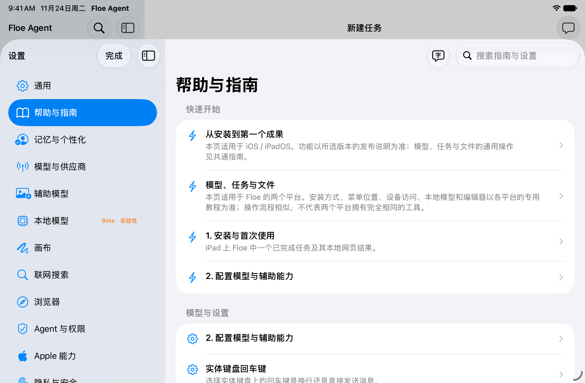
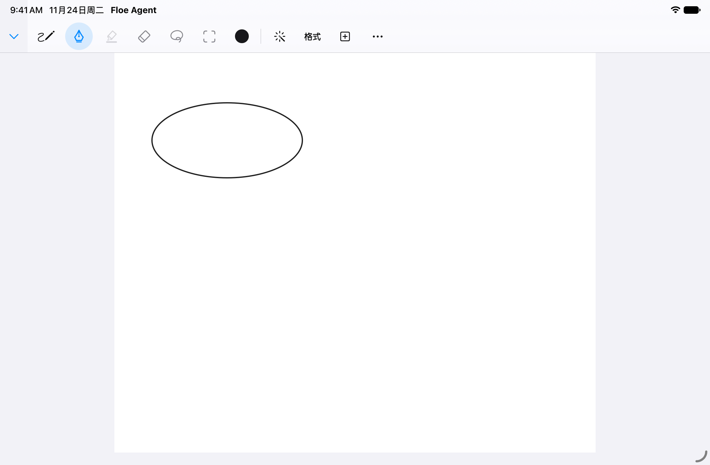
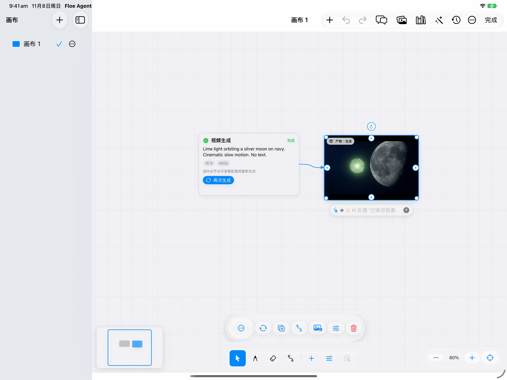
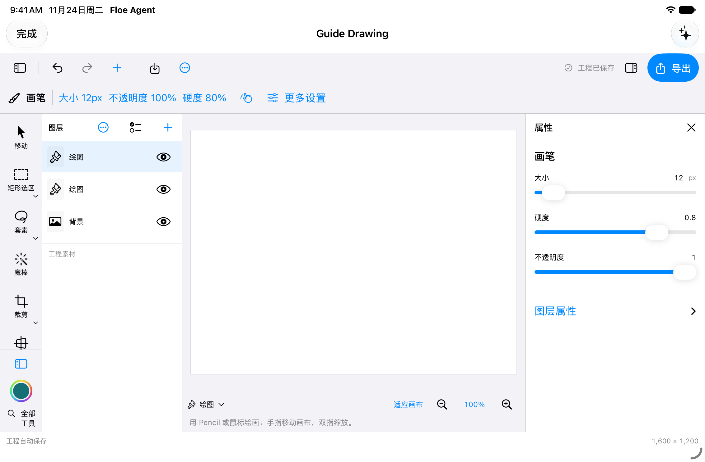
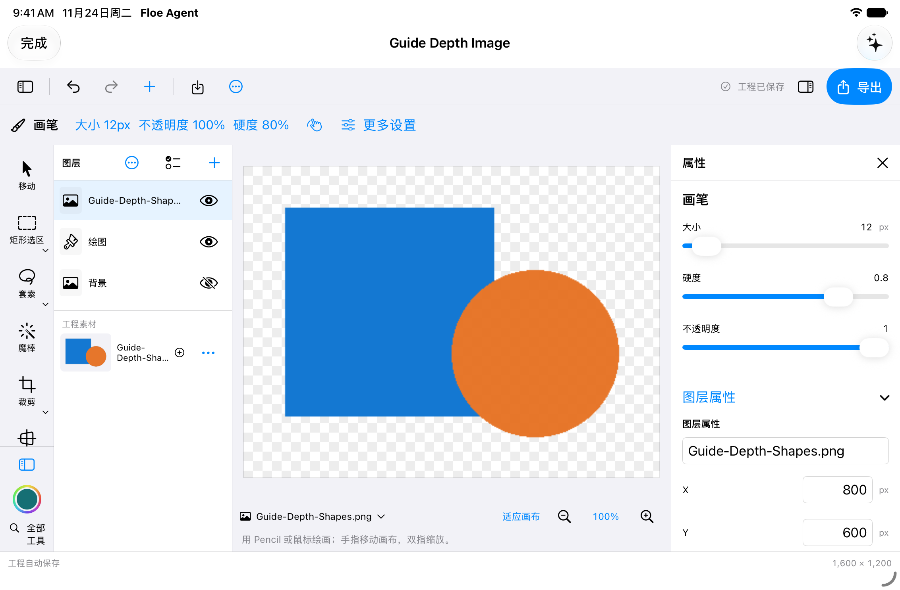

Floe エージェント ユーザーマニュアル
概要
このガイドでは iOS/iPadOS を取り上げています。 開始 インストールから最初の結果まで. App Store、GitHub/Feather、TestFlight のバージョンは、検証日とともに追跡されます。 チャンネルのステータス. GitHub IPAs はご自身の署名が必要です；TestFlight の可用性はお客様のグループに従います。 ご覧ください ワークスペースガイド ビルド固有の機能のために。
ご覧ください 共有ガイド モデル接続、最初のタスク、保存、フィードバックについて。 このマニュアルは、このプラットフォームのインターフェースと機能について取り上げています。
簡体字中国語 · 証拠書類 · ウェブサイトマニュアル
FloeでAIタスク、Notes、Office、Drawing Assistant、Canvas、メディア、そしてローカルおよびリモート開発の使い方を学びましょう。 iPad 用に設計され、iPhone でも利用可能です。Floe には iOS/iPadOS 26 以降が必要です。
このガイドではワークフローについて説明します。ビルド固有の制限については、ワークスペースガイドと選択されたリリースノートを使用してください。 インストールされたバージョンの設定を確認してください リリースおよびインストールのステータス 各チャンネルでの利用可能性について
はじめに
文書と創作活動
開発と接続
- 9. ローカル端末とLinuxの性能
- 10. Python、ノード、パッケージおよびコード実行
- 11. Git と GitHub のアクション
- 12. リモートホスト、デスクトップ、診断
- 13. ブラウザ、ウェブプレビュー、ログイン
さらに多くのツールとヘルプ
- ヘルプとガイド
- 17. スキル、MCP、メールと自動化
- 18. バックグラウンド作業、PiP、通知およびデータ
- 19. 一時チャット（RAM専用）
- 22. スペースと専門作業台
- 20. トラブルシューティング
- 21. 有益なフィードバック
1. インストールと初回使用

ローカルウェブの結果を含む完了したタスク。 Check the model and workspace before sending your first request. The task screenshot above shows 1.7.74 (315). The new screenshots in this guide show 1.8.72 (393) in the iPad Simulator.
- からインストール App Store リスティング リンクされた 公式ウェブサイト; 在庫状況は店舗の状況に従います。 ベータ版では、すでにアクセス可能な TestFlight グループを使用し、そのビルド、期限、テストノートを確認してください。
- GitHub または Feather/AltStore の配送については、リリースページに記載されたインストール手順に従ってください。 GitHub デベロッパー IPA は署名がなく、独自の署名方法が必要です；これは TestFlight パッケージではありません。
- オンボーディングを完了しました。 iPhone のサイドバーと iPad の複数列をご利用ください；エディタは全画面で開くことができます。
- Core Notes、ファイル整理、CanvasはAIプロバイダーを必要としません。 AI作業を依頼する前に、プロバイダーに接続してください。
- 設定 → 診断と情報でインストール済みのバージョンを見つけ、フィードバックに含めてください。
最初のタスクとして、モデルを設定し、テスト会話を作成し、合成テキストファイルを添付し、要約をリクエストしてください。 ツールのレシートを検査し、出力ファイルを開いてください。 重要な文書の前にサンプル資料を使用してください。
セットアップガイド
Light Start、Everyday、Voice Conversation、Development & Creation を選択するか、ご自身で設定してください。 推奨事項は事前入力の選択肢のみです：すべてのルートは同じ完全なガイドに従います。 既存の設定はそのままで、個別に調整できます。
| セクション | 設定できるもの |
|---|---|
| チャットとモデル | サービスを接続し、テストし、チャットモデルを選択してください。 |
| 画像と創作 | 画像の理解、生成および編集、ビデオ、そしてCanvasアシスタント |
| ウェブ検索 | 検索サービスを追加してテストし、デフォルトを選択してください。 |
| 声 | 入力言語、音声、速度、読み上げ、割り込み |
| ファイルとワークスペース | 作業フォルダー、オンデバイス環境、リモートコンピュータ、コードリポジトリ |
| パーソナライズとメモリー | プロフィール、SOUL.md、メモリ、および自動更新 |
| 権限とプライバシー | アクション承認、デバイス機能、本人確認 |
| 背景 | 背景音声、ピクチャー・イン・ピクチャー、その他の背景オプション |
| 同期とストレージ | iCloud、設定および認証情報の同期、ダウンロードされたリソース |
| スキルとアップデート | スキルを閲覧・インストールし、コンテンツの更新を管理する |
戻る、続行、または後でセクションを残す メインモデルを接続しても、ガイドは早期に終了しません。 最終概要は各セクションにリンクしています。 保存された設定に再度入らずに、終了して後で続行してください。
ダウンロードはセットアップを遅らしません。 音声パック、モデル、または環境のダウンロードを開始したら、次のセクションへ進むか、Floe の使用を開始してください。 設定に戻って、別のダウンロードを開始せずに同じダウンロードをご確認ください。 最終的な概要では、保存された設定、準備中のリソース、そして後で残される項目を区別します。
ダウンロードは実際のサイズ、進行状況、速度を表示します。 100% に到達すると、チェックやインストールが続くことがあります。リソースはそれらが完了した後にのみ利用可能になります。 失敗した、停止された、または容量制限のあるダウンロードは、そのリソースにのみ影響し、後で再トライできます。 ページを閉じたり、ガイドを離れたりしても、キャンセルされません。 アプリの終了後のバックグラウンド処理および作業はシステムの制限に依存します。再開は実際の状態を確認し、再開するか、Continue アクションを提供します。
ダウンロードした音声は、待機中に選択した別の音声を置き換えるものではありません。 環境をインストールしても、環境は起動しません。 Apple Intelligenceは新規ユーザーに対してデフォルトでオフになっており、対応デバイスで有効にできます。 既存の選択肢は保持され、Apple Intelligence がないデバイスでは他のモデルが引き続き利用可能です。
ヘルプとガイド
- Tap the gear at the bottom of the sidebar, then open 設定 → ヘルプとガイド. Browse by topic or use 検索ガイドと設定 in the upper right. Built-in guides are available offline.
- Open an article and use the list icon to open 目次. Select a heading to jump to it. The magnifying glass searches the current article. Open Format for reading options, or tap an image to enlarge it.
- Use the article’s back button to return to Help & Guides. Tap 完了 in Settings to return to the task or screen you had open.

操作で助けが必要なときは、現在のアシスタントにお尋ねください。 回答の引用をガイドし、該当する章を開いてください。 いつ この設定を開く 提供されています。タップしてその設定に到達し、ご自身で変更してください。 クローズヘルプは、ドラフトと進行状況が保持された状態で、元のタスクまたはファイルに戻ります。
For example, search for “Return Key” in English. Open 変更してください, then tap この設定を開く to highlight Hardware Keyboard → Return Key in General. You can go back after looking at the setting. If search comes up empty, try a shorter feature name in the app’s current language.

失敗したガイドの更新は、既存のコンテンツを読みやすく保ちます。 アプリを更新すると、デバイスに既に保存されている新しいガイドが保持されます。 検査する チャンネルのステータス そして、機能の可用性のためにインストールされたビルドです。
Mac Bridge クイックスタート
Floe Bridge は、Floe エージェントのオプションの Mac メニューバーコンパニオンです。 Floe と同じ Mac 上で動作し、Linux イメージを使用せず、ローカルのみの認証接続上でタスク端末、ファイル、MCP の機能を提供します。 これは iPad から Mac へのリモートブリッジではなく、LAN アドレスを公開したりリモートリレーを使用したりしません。
選択されたリリースで、サポートされているMac、macOS、および対応するFloeバージョンを確認してください。 両方のアプリは同じMacで動作します。 これは～とは別です Floe iOS ブリッジ、iPhone/iPad制御コンパニオン。
- 開く Mac Bridge のリリース履歴、バージョンを選択し、リンクされた GitHub リリースからその DMG をダウンロードしてください。 そのリリースのインストール要件と、提供されたチェックサムを使用してください。
- DMG を開き、Floe ブリッジをアプリケーションにドラッグし、起動してください。 そのアイコンはmacOSメニューバーに表示されます。
- 同じMac上のFloeで、このMacを選択して接続を開始してください。 Floe と Floe ブリッジはそれぞれネイティブ確認を示します。一致するコードを比較し、両側で許可してください。 両側の拒否により、接続が閉じたままになります。
- タスクが実際に必要とする権限のみを付与してください。 ターミナルタスクが保護されたフォルダーに接触した場合、フォルダーへのアクセスが要求されることがあります；画面録画およびアクセシビリティは、必要な機能に対してのみ要求されます。 macOS システム設定で、後で確認または取り消すことができます。
- タスクからの接続を使用してください。 端末、ファイル、そして MCP の機能は、切断すると終了します。
メニューバーのアイコンが表示されない場合は、アプリケーションからFloeブリッジを再度起動してください。 macOS が初回起動時に確認を求めた場合は、システムの指示に従い、セキュリティ警告を回避しないでください。 接続が拒否された場合、両方のアプリが同じMac上であること、バージョンが選択されたリリースの要件を満たしていること、そして双方が同じコードを許可していることを確認してください。 切断するには、Floe Bridge メニュー → Connections and Storage... → Disconnect を使用してください。これによりペアリングが取り消され、ターミナルジョブが終了します。 Floe Bridge を終了して、ローカルリスナーを停止し、残りのターミナルジョブを終了してください。
2. モデルと補助機能
クラウドプロバイダー
開く Settings → Models & Providers, then tap +. Choose a chat, image generation/editing, or video generation provider. For chat, enter the endpoint, protocol, exact model ID and credential supplied by your provider. Test the configuration, enable the provider and model, then verify the model shown on New Task.

プロバイダー名およびモデル名には、ハイフン、アンダースコア、バージョンドットなどが含まれる場合があります。 qwen3.5-plus いや model_v2.1. 実際のモデルIDは、提供された通りに正確に保持してください。 プロバイダーの表示名は、貼り付けた改行や偶発的な見えない書式を正規化しつつ、意味のあるUnicodeを保持します；サイズが大きい名前はUTF-8サイズであることを報告します。
モデルが見つからない場合は、プロバイダー/モデルスイッチと「メインモデルリストから非表示」を確認してください。 隠しは補助的な使用を保持します；無効にすると新しい選択が防止されます。 プロバイダーからの電話は、第三者に料金がかかる場合があります。 認証情報はキーチェーンに属すべきで、プロジェクトファイルやスクリーンショット、公開課題には決して含めません。
Floe は、何も書き込む前にフォームを検証します。 お使いの言語で無効なフィールドが報告され、書き込みが開始されず、フォームはその内容を保持します。 ローカルのセーブと iCloud のアップロードは別々に報告されます。「このデバイスで保存済み；iCloud 同期は保留中」とは、設定がローカルにコミットされ、アップロードが再実行できることを意味します――失敗したセーブではなく、API キーを再入力する必要はありません。 検証に失敗したリモートレコードはスキップされ、ローカルコピーは保持されます。
「テキスト/画像/動画の追加」で、タップしてください プロバイダ フィールド自体が検索可能なセレクタを1つ開く：組み込みプロバイダーのプリセット（明示的な手動/カスタム選択を含む）と検証済みカタログエントリは同じリストにあり、入力に合わせて一緒にフィルタリングされます（エイリアスと設定されたバッジを含む）。 別個のプリセット行はなく、「add from catalog」ボタンもなく、別個のカタログページもありません。 エントリを選択すると、セレクタが閉じられ、カスタム表示名を含む、すでに入力した他のすべてが保持されます。 実際に複数のサービスロールをサポートしているベンダーを選択すると、一度限りの 追加の使用 開始したロールが固定され、すべての追加ロールがオプトインになるプロンプト；選択してください 環境設定する, 今はだめだ、またはシートを破棄してください — 却下されたロールは再度提供されません。 余分なロールは、オリジン、プロトコルファミリ、認証スタイルが実際に一致する場合にのみ、この接続のエンドポイントと API キーを共有し、別のオリジンが表示されます。 別途設定 独自の可視設定を備えています。 接続アイデンティティ（スキーム/ホスト/ポート/プロバイダー ファミリー/認証スタイル）を変更すると、入力されたキーがクリアされ、接続間で保存されたキーを黙って再利用することを拒否されます。
カタログのメタデータはモデルごとに検証されており、プロバイダー全体に対して保証されているわけではありません。 追加するモデルは、現在、バンドルされたカタログが実際に検証した機能（例として、ビジョン対応モデルの画像入力）から開始されます。 メタデータが存在する前に保存したモデルは、黙って書き換えることはありません：Floe はワンタイムを提供します。 モデル機能の更新 各モデルとそれが得られる正確な能力を列挙したレビュー（前 → 後) と、選択するまで何も書きません アップデートを適用 (または 今はだめだ). ご自身で設定した機能は、ご自身の決定として記録されます。後のカタログ更新や iCloud の同期は元に戻せず、オフにした機能はオフのままです。 "Supports text/images/video" は、カタログがそのエントリに対して検証するロールを示すものであり、テスト済みのライブ推論ではありません。最初の実際のリクエストは依然として互換性チェックです。 GitHub Copilot、Azure、Amazon Bedrock、Google Vertex は、新しいプロバイダーを追加する際に提供されません — Floe は OAuth やデプロイメントスコープのエンドポイントがない限り実行できません — しかし、既にそれらのプロバイダーに保存した接続は一覧に残り、編集可能です。
それをサポートするモデルは、推論/思考努力の設定も持ちます。 と 自動の, Floe は、設定した補助テキストモデルに対し、新しいラウンドが開始された際にそのリクエストの努力を選択するよう一度要求します。決定はラウンド中に保持され、ガイド/ステアおよび継続メッセージを含み、ラウンドの途中で再分類されません。 あなたが選んだ手作業は決して変わりません。 補助モデルが設定されていない場合、またはヘルパーが失敗またはタイムアウトした場合、Floe はモデルがサポートするデフォルトにフォールバックします。
Volcengineのペイ・アズ・ユー・ゴーとエージェントプラン、そしてAlibaba Cloudのペイ・アズ・ユー・ゴーとトークンプランは、別々のプロバイダーの選択肢です。 ご購入いただいたプランを選択してください。各プランはそれぞれ独自のエンドポイント、キー、モデルを保持します。 保存やテストを行っても、別の課金チャネルに切り替えることはありません。
公開カタログからサブスクリプションモデルを選択するか、手動でモデルIDを入力してください。候補者はアカウントの権利を確立しません。 接続テスト 選択したチャットモデルに小さなリクエストを1件送信し、プランの利用にカウントされる可能性があります。 設定を開くまたは保存しても、画像や動画は生成されません。 Volcengine エージェントプランのイメージ候補は、従量課金モデルとは別であり、そのビデオエントリは本アップデートでは提供されていません。 Alibabaのペイ・アズ・ユー・ゴーとToken Planは、それぞれの画像および動画サービスを利用しています。 送信された動画は既存のタスクIDを保持します。ステータス検索に失敗した場合、別の有料生成は送信されません。
ウェブ検索プロバイダー
DeepSeek Search は、独自のキーを持つ別個のプロバイダーとして利用可能で、ページコンテンツを含めるオプションもあります。 長い要約とコンテンツは、サービスが返すまま保持されます。 インターフェースは簡潔な投影を示し、アシスタントはコンテキスト容量内で全結果を使用するか、さらに読み取ることができます。 検索サマリーはまだソースの検証が必要です。
設定 → Web検索は、追加したプロバイダーのみを一覧表示します。 使う プロバイダーを追加 サービスまたは互換性のあるカスタムインターフェースを選択し、アカウントを設定し、検索をテストします。 保存された各アカウントには、それぞれ独自のスイッチと優先順位があります。 追加画面からプロバイダー ディレクトリを更新するか 設定 → アップデート; ダウンロードしたディレクトリの更新は、保存されたアカウントとキーを保持します。 プリセットされたプロバイダー名はディレクトリの更新に自動的に従い、ご自身で編集した名前は保持されます。 既存のアカウントに適用する前に、他の利用可能な変更を確認してください。
検索は、カウントが指定されていない場合に5件の結果を返し、インターフェースの要約を簡潔に保ちます。 有効化されたプロフェッショナルデータセットは、現在のタスクが許可した場合、同じ検索ツールと選択されたアカウントを使用します。 通常のテキストおよび音声チャットは、検出および通話が有効で、認可されたツールです；プロフェッショナルなデータセットでも、設定されたアカウントと権限が必要です。 一時的なチャットは読み取り境界を保持します。 連続音声を残すと、元の会話モードが保たれます。
Volcengineエディタで、キーに一致するアカウントを選択してください：
- エージェント プラン Doubao 検索 — エージェントプランキー（オプション） プロフェッショナルなデータセット （デフォルトではオフで、メインの検索スイッチとは独立しています；エディタは実際の接続状態を表示します）
- アークの回答 — 普通のArk APIキー。 アンダー サーチエンジン, Doubao カスタム検索 Doubao検索エンジンを使用していますが、 オンラインコンテンツ Toutiao、Douyin百科事典、Moji天気を一緒に使用します。
- Doubao 検索 API — 別のDoubao検索キー。
- カスタムエンドポイント（レガシー） — 既存のカスタムエンドポイント。
オンラインコンテンツ 個々のスイッチを使用せずに、3つのソースをすべて同時に有効化します。 クエリの書き換え そして 権威ある情報源のみ Agent Plan と Doubao Search API で利用可能です。 既存のデフォルト検索プロバイダーと優先度は変更されていません。
ビジョン、生成、画像編集
設定 → 補助モデルは、画像の理解、画像の生成、および画像の編集を個別に設定します。 テキストサポートは、これらの機能のいずれかを意味するものではありません。 編集を依頼する前に、元画像を添付してください。
小さなテキストや寸法ラベル、その他の細かい詳細については、アシスタントに元画像の領域を表示するよう依頼してください。 ローカルビューはソースファイルを保持し、選択されたリージョンを現在のビジュアルワークフローに提供します。 モデルやページを変更した後、新しいスクリーンショットを求めてください。以前のキャプチャはその以前の状態を表しています。
Apple とダウンロードされたモデル
Apple のシステムモデルは OS によって管理されています。 Floe が示す可用性の理由に従ってください：デバイスサポート、Apple Intelligence の設定、またはモデルの準備状況。 Floeには、そのシステムモデル用のダウンロードボタンがありません。
ダウンロードされたMLXモデルはベータ版です。 ダウンロード、ロード、推論は別々の段階です。マルチターン作業の前に、まず短いテキストから始めてください。 ローカルパスはテキストと添付の限定されたOCRを使用し、意味的な画像理解は使用しません。 Linux ゲストとローカルモデルはデバイスのメモリを共有します。 リソースのリリース要求をすべて確認してください。キャンセルしても、別のタスクの停止が許可されるわけではありません。 無効化するとファイルが保持され、削除するとダウンロードが削除されます。 クラッシュ後にすべてのデータを消去せず、現在の診断情報を保持してください。
3. タスクとワークスペースの所有権
On New Task, check the model, project, execution target, mode and permissions underneath the composer. Tap Ask to view task permissions. The speech bubble at the upper right starts a temporary chat. With no project, Floe uses a private task workspace. With a selected project, file actions belong to that project. Attach the material you need and describe the outcome, format, location and completion criteria.
この添付ファイルを読み、現在のワークスペースで1ページの要約とアクションリストを作成し、完成したファイルへのリンクを私に提供してください。 草稿は継続的な課題となります。 後続のメッセージは同じタスクコンテキストを使用します。
システムファイルピッカーを使用して外部フォルダーを認可してください；チャットでパスを書いてもアクセス権は付与されません。 プライベートタスクを削除すると、そのプライベートワークスペースが削除される可能性があります。 プロジェクトタスクの削除は、プロジェクトファイルの削除とは異なります。 重要な結果を先にエクスポートしてください。 Notesは、チャットの削除とは独立して独自のドキュメントを保存します。
4. 会話、計画、目標、そして回復
| モード | 目的 | 何をすべきか |
|---|---|---|
| エージェント | 作業を実行してください | 結果を述べ、権限、ツール、ファイルを検査してください |
| プラン | 提案されたアプローチについて議論してください。 | 実行されたステップとして扱う前に、確認し、受諾してください。 |
| 目標 | 段階を横断して作業する | 手順、予算、完了の証拠を定義する |
Return は新しい行を挿入します；Command+Return はサポートされている場所へ送信します。 テキストは利用可能な幅で折り返し、展開は3行目に表示されます。 さらに入力すると、入力位置が表示され続けます。 完全な編集者は同じ草稿を共有しています。 実行中のメッセージは、別のタスクを作成せずに要件を修正できます。
質問に答えること。 アシスタントは現在のタスクで質問カードを表示できます。 選択、入力、または音声入力で、一度に一つの質問に答えてください。 必要な質問は、あなたの返信をお待ちしております。 任意の質問は、独立した作業中に開いたままにすることも、指定された間隔を待ってからアシスタントが明示的に特定された仮定を使用することもできます。 沈黙は決して同意を意味するものではなく、回答は行動の許可を与えるものではありません。 通知が許可されている場合、サポートされている質問はバックグラウンドインライン返信を受け入れます。 一時的なチャット質問は現在のセッションにのみ残ります。
ハードウェアキーボード。 設定 → 一般 で、Return が改行を追加するかメッセージを送信するかを選択してください。 Return が送信されると、Shift–Return が新しい行を追加します。 Command‐Return は依然として送信されます。 この選択はインラインおよび拡張メッセージコンポーザーに適用されます；オンスクリーンキーボードは既存の動作を保持します。
テキストの選択と検索 メッセージまたはアシスタントの返信を長押ししてテキストを選択し、選択範囲を調整し、コピーしてください。 会話メニューから「Find in Chat」を選択するか、Command+F を押してください。 ドラフトを変更せずに、ハイライトされたヒット間を前へ、次へジャンプできます。 サイドバー検索は、保存された通常の会話も見つけます。 複数の単語はすべて一致しなければなりません；引用されたフレーズは一緒に残してください。 結果は実際の一致する行を示しています。
Schedule a task. 開く Task Center from the sidebar, then tap the calendar icon to open the scheduling form. Enter a name and instructions, choose the workspace, run time and repeat rule, then check the time zone before saving.
予定されたタスク。 会話ナビゲーションバーの下にリンクされたプランが表示されます。 タイミング、パラメータ、実行履歴については、開いてください。 各事象はそれぞれ独自のタスクを作成します。 Run Now は、元の時間を変更せずに、追加の実行を行います。 Skip Next はその発生をスキップします；Cancel Future は既存の履歴を保持します。 成功した出来事がそれ自体で全体の目標を完了するわけではありません。アシスタントは、目標が達成された計画を明示的に完了しなければなりません。 ライブアクティビティは、実行中の作業または最寄りの待機時間を表示する場合があります；配信および実行のタイミングはシステムのスケジュールに従います。
バックグラウンドの中断後、元のタスクに戻り、最後のツールの領収書を確認し、Resume を使用するか「Continue」と送信してください。 不確かなアップロードや提出、その他の副作用を繰り返す前に確認してください。 前景に戻ることは、古いプロセスが残っていることを意味するわけではありません。 有界停止または未知の副作用の結果は、意図的な回復が必要です：最後の受領を検査または照合し、そして再開してください。 読み取り専用チェックだけでは、一時停止された作業が自動的に再装備されるわけではありません。
新しい出力を追わずに履歴を読むには上にスクロールし、下部に戻って追跡を再開してください。 サイドバーの会話を長押ししてアクションを開き、次に「Multi-select」を選択して選択円を表示してください。完了すると選択モードが終了します。 Pin と Unpin は同じメニューにあります。 ピン留めされた会話は、再起動後も含めて、グループの先頭にとどまります。
バッチ管理は、タスクセンターおよび設定 → データ管理 → タスク管理 でもご利用いただけます。 選択とすべて選択は、現在のフィルターと検索に表示されているタスクにのみ適用されます。 アーカイブは確認を要求し、まず選択されたタスクの実行中の作業を停止し、アーカイブされたタスクは同じ画面から（アーカイブに切り替える）またはアーカイブリストから後で復元できると通知します。削除するとそれらのタスク自身の作業も停止し、各タスクのプライベートワークスペースが削除され、共有プロジェクトファイルは残ります。 各タスクはそれぞれ結果を報告します――失敗したまたは未検証のタスクは再試行のために選択されたままであり、未処理のタスクに手を付けずに実行中のバッチを停止できます。
5. 権限と検証
ツールカードは、アクションの進捗と結果を示します。 権限リクエストが表示されたら、対象と効果を確認してください。 以前のツールのアクティビティは、スクロールするとロードされ、別個の履歴展開ボタンは表示されません。 個々のツールカードは依然として展開され、詳細が表示されます。
- ツールカードを展開し、その対象、作業領域、結果を確認してください。
- 権限リクエストを許可する前に、対象と副作用を確認してください。
- 生成されたファイルを開いてください。 編集可能な文書については、保存し、閉じて、再度開いてください。
- リモートコマンドの終了コードとホストの識別情報を確認してください。 「Started」は「completed」ではありません。
- 結果が異なる場合、削除された証拠で実際に何が起こったかを報告してください。
通常の Office、PDF、画像、動画、および CAD の編集は、タスクの許可されたローカルスコープ内で、各ステップの確認なしで実行できます。 リビジョンチェック、リカバリ可能なセーブ、および出力検証は依然として適用されます。 コードリポジトリへの書き込み、未解決のターゲット、明示的な破壊的上書き、外部送信、および保護された PDF アクションは、適用されるレビューまたは同意を保持します。 提案のプレビューまたはレビューのリクエストは、まだ採用待ちです。
ジオメトリ、マテリアル、アセンブリ、アニメーションを含むネイティブ3D文書編集は、リポジトリに保存されたCAD文書を含め、追加の人間やモデルによるレビューを必要としません。 ファイルへのアクセス、リビジョンチェック、元に戻すチェックは引き続き適用されます；エクスポートされたファイルは通常の宛先チェックを保持します。
タスクの解決済みローカル Linux ゲストにおけるルーチンコマンドは、繰り返しレビューが少なくなります。これにより、Mac ホストは使い捨てゲストとして扱われません。 リスクの高いリモートマシンの変更は、既存のレビュー方針の対象となります。 共有ゲストセッションは所有権とキャンセルが別々に保持され、環境の停止またはリセットは別の操作です。
ドキュメント、ウェブサイト、ツールの結果、およびメモリは新しい権限を付与できません。 埋め込まれた指示に従って認証情報を公開したり、アクセス範囲を拡大したりしないでください。
委任されたサブエージェントは、現在のタスクと同じ有効な権限で実行されます。explore/research/execute の選択は権限レベルではなくフォーカスヒントであり、すべての子呼び出しはメインタスクと同じ承認、ワークスペース、環境、ミューテーション‐シリアライズパスを経由します。 サブエージェントは、再度委任したり、新しいユーザー可視タスクを作成したりすることはできません — delegate そして conversation.spawn はメインタスク専用であり、実行時に拒否されます。単に隠されているだけではありません。 あるタスクの兄弟サブエージェントは、境界付きメッセージを交換できる場合があります。メッセージは信頼できないデータであり、決して権限付与ではなく、完了したサブエージェントを再起動することはできません。
サブエージェントは独立して使用できます tools.list / tools.search そして skill.list / skill.search / skill.read. それは、タスクに必要なツールとワークフロー指示をロードし、各リクエストでツールカタログ全体を受け取る代わりに実行します。 スキルは、スクリプトやネイティブツール、および設定された MCP を同一のタスク権限内で使用することを指導できます。スキルを読み取っても新しい権限は付与されません。 既知のツールは、まずガイドを読む必要がありません。
複数のタスククライアント（親実行とその子プロセス）は、別々のプロセスおよび実行セッションを通じて、1つのLinux環境を共有することがあります。 結果、作業ディレクトリ、標準入出力およびキャンセルは要求セッションに属します：一方の子をキャンセルしても他のコンシューマを停止せず、環境全体を停止することは別個のライフサイクルアクションです。 同じ既知の対象への書き込みは、通常のタスク編集と同様の調整に従います。
6. ファイル、エディタ、および同時変更

作業台でタスクの横に開いているファイル。 ファイルパネルで出力を開き、その内容を検査し、保存して再度開いてください。
タスク/プロジェクトのファイルパネルを閲覧し、エディタでテキストを開き、実行または共有する前に保存してください。 レビューの競合：重複しない変更は統合される可能性があります；重複する編集は決定が必要です。 リカバリコピーは、元のコピーが保存されたことを意味するわけではありません。
ファイルアシスタント。 ファイル内のアシスタントを開いて、そのファイルの既存の会話を続行してください。 パネルを折りたたみ、ドラフトを保持します。 後で、ファイルタイプで検索してください ファイルタスク タスクセンターでは、実行中の作業、承認、保留中の作業は、グローバルタスクエントリから引き続きアクセス可能です。 アイドル時に直接送信してください。 実行がアクティブな間は、現在の作業を操作するか、フォローアップをキューに入れ、必要に応じて切り替えてください。
ファイルを「最近削除済み」に移動したり、復元したり、完全に削除したりすると、まず関連するアシスタントの実行が処理されます。 Floe が「作業がまだ停止中または完了中」と表示する場合は、プロンプトに従い、すぐに再試行してください；リカバリコピーは保持してください。 永久削除する前に、関連する会話とファイルのスコープを確認してください。 この操作は選択されたファイルとそのアシスタントに影響を与え、他のタスクはそのまま残ります。
テキストについては、実行前に保存エラーを解決してください。 Office では、両方のバージョンを保存し、比較してください。 ノートは、矛盾するコンテンツをリカバリ文書として保持できます。 受諾されたファイルがチェックされるまで、Recovered Edits を保持してください。 アーカイブには限定的なプレビュー/抽出とフォーマットの制限があり、その内容は信頼できません。 見てみる 同時編集.
7. メモ：インポート、検索、手書き

Notes ドキュメントとそのコントロールが開かれています。 開く Space → Notes on builds with Space. Earlier builds have a direct Notes entry in the sidebar.
On builds with Space, open Space → Notes → +. Choose Blank Note, enter a name, and tap Create. The same menu offers meeting notes, mind maps, notebooks and Office files. For task files, choose Import from Floe Workspace, choose the project or task, then choose the file. Check pages, text and attachments after import. The Notes copy is independently stored, not a live mirror of the source.
別のアプリから共有する場合や Floe でファイルを開く場合は、メモ、タスク、または Canvas を選択してください。 タスクまたはキャンバスの場合、既存のターゲットを選択するか、作成してください。 既存のタスクドラフトは保存されます。 Notes 内のインポート アクションは直接 Notes に向かい、タスク内の添付アクションはそのタスクに追加されます。 インポートしてもメッセージは自動的に送信されません。
ライブラリからタイトルと文書テキストを検索してください。 スニペットは結果の特定に役立ちます；未完成のインデックスは一致を省略できます。 必要に応じて、文書メニューを使用してテキストインデックスを再構築してください。 タブは文書を切り替えます。タブを閉じても、その文書は削除されません。 ドキュメント内の検索結果を選択して、そのページへジャンプし、一致するテキストをハイライトしてください。 一部のPDFはページレベルのナビゲーションのみをサポートしています。
ペン、ハイライター、消しゴム、またはラッソを選択してください。 現在のペンまたはカラーを再度タップして、タイプ、カラー、幅、透明度を変更してください。 小さいものから大きいものまでの5つのドットで、幅を素早く調整できます。ストロークプレビューが更新される間は、スライダーを使用して微調整してください。 NotesにインポートされたPDFは、同じ書き込み設定を使用します。 UIが「transparenterency」と表示する場合、0%はソリッドで、100%は透明です。 短いテストストロークを作成してください。 鉛筆の絞り/ダブルタップはハードウェアおよびシステム設定に依存します；指描画は別途有効になっています。 ラッソはコンテンツを操作し、AI選択がコンテキストを提供します。
閉じるまたは切り替える前に、保存状態を確認してください。 復元のためにゴミ箱を使用し、永続的に削除する前に添付ファイルを確認してください。 ドキュメントアシスタントには独自の会話があります。 通常のチャットでは、Notes の素材を明示的に追加し、不要になり次第アクセス権を取り消してください。 ページ上のアシスタント編集を確認し、適切な場合は「Undo」を使用してください。 アシスタントはご確認のために編集をプレビューし、適用された変更は取り消すことができます。 選択したページまたは文書全体を PDF にエクスポートするか、ポータブルに保存してください。 .floenote アーカイブ 元のPDFテキストの編集および手書き文字を編集可能なテキストに変換することはサポートされていません。
アシスタントのエクスポート ドキュメントアシスタントに利用可能な形式を一覧表示させ、次にエクスポートしてください。 返されたファイルカードには「プレビュー」と「共有」があり、各操作はファイルを検証します。 ノートブックのページは PDF にエクスポートされ、マインドマップは Markdown にエクスポートされ、Office/エンジニアリング文書は元のファイルに戻すことができます。 モダンオフィスファイル（.docx, .xlsx, .pptx) また、PDF にエクスポートします；レガシーの Office フォーマットは元のファイルを使用します .floenote. すべての文書種別をサポートしています .floenote. 既存の異なる宛先ファイルは保持されます。
Office ドキュメントを Notes に保存すると、保存された内容から自動的にカバーが更新され、最初のページのインクも含まれます。 プレビュー モードで既存の文書を開くと、欠落しているカバーも埋められます。 カスタムカバーは優先されます。 プレビューが更新できない場合は、選択してください アップデートプレビュー 再試行してください；保存された文書とインクはそのまま保持されます。
文書のカバー。 Notes ドキュメントは、生成されたプレビューの代わりにカスタムカバーを使用できます。ドキュメントメニューを開き、選択してください。 カバーを設定 いや カバーを変更 写真やファイルを使用する、または 自動カバーを復元 戻る カバーは文書本体とは独立しており、設定または復元しても内容のリビジョンは変更されず、元に戻す履歴にも入らず、元の Office/PDF の内容を決して変更しません。また、他のデータが参照している間に、以前のカバー画像は破棄されません。 Notes アシスタントは、そのタスクで選択されたドキュメントに対して同じカバーアクションを持ちます（notes.cover, read / set / restore): read はカバーの状態を報告し、set と restore は期待される文書のリビジョンと前回のリードからのカバーのリビジョンを担うため、古い試みは新しいカバーを上書きする代わりに拒否され、選択された文書またはそのタスクのワークスペースで許可されたファイルが参照した画像のみが使用可能です。 使用できない画像は却下され、前のカバーはそのまま残ります。 エイ .floenote カスタムカバーを含むアーカイブは、カバーをサポートしていない古い Floe バージョンでは、不完全にインポートされるのではなく、拒否されます。
読書モード。 テキストファイルとテキストのみのNotes文書には、代替の読み取り専用があります。 読書モード 同一ファイルの場合、元のファイルは決して変更されず、エディタは利用可能なままです。 リーディングモードは、テキストサイズ、行間、列幅、外観（ウォームペーパーテーマを含む）、コンテンツ一覧および文書内検索を提供し、ファイルが一致した場合にのみ最後の閲覧位置を復元します（タスクのプライベートワークスペース内のファイルは位置を保持しません）。 テキストのみが表示されます — インクや画像が入ったノートはテキストとして読み取られ、それらはそのまま残されます。 エンコーディングは自動的に検出されます（UTF-8、UTF-16、そしてプラットフォームがコーデックを提供する場合はGB18030）。検出が不明確な場合は、手動で「Automatic」またはUTF-8、UTF-16 LE/BE、またはGB18030（利用可能な場合のみ）を選択できます。また、ファイル全体をデコードできない選択は、置換文字を表示する代わりに拒否されます。 64 MiB を超えるファイルは、部分的に読み込まれるのではなく拒否され、非常に長いファイルは行インデックスが満杯になると行番号が表示されなくなることがあります。 他のフォーマットは既存のネイティブビューア（PDF、Office、CAD、画像、メディア）を保持しますが、読み取りモードはそれらをテキストに変換しません。
スペースワークス（新しいビルド） 1.8 ビルドでは、サイドバーの Space エントリに、個人ファイルや編集可能な作品（文書、図面/画像、ビデオ、CAD、音楽、会議など）を Notes ライブラリの横に格納します。 スペースワークはあなたのものであり、チャットタスクのものではありません。チャットを削除しても作業は削除されませんし、作業を削除してもタスクやプロジェクトのファイルには触れません。 見てみる スペースと専門作業台.
Add a shape and check it saved
- In a blank note, choose the square + in the writing toolbar and select Ellipse. The shape appears on the current page. The same menu offers rectangles, lines and arrows.
- 軽くたたく Undo to remove the shape and Redo to restore it. Use the chevron at the left of the editor to hide the document tabs and title bar. Tap it again to bring them back.
- Use the top-left back button to return to the library. Reopen the note and check that the shape is still there. Export as PDF for reading elsewhere, or keep the note or export a Floe note package to edit it again.

8. Office: 編集、注釈、保存、再開
| Feature | What to use it for |
|---|---|
| Word | Write reports, proposals and other documents. Organize them with paragraph styles, lists, images and tables. |
| Excel | Build budgets, inventories and data sheets. Use formulas to calculate totals, and sort or filter the data. |
| PowerPoint | Build presentations and teaching materials. Add, remove, duplicate or reorder slides in the navigator. |
Create a document through Space → Files → + → Document…, or import a DOCX, XLSX or PPTX. Save from the ribbon after editing. Choose the pen to annotate with Apple Pencil. The document assistant in Notes can inspect a specific page or cell range. Review its proposed changes before applying them.
To share or print, open Export Format → PDF いや Print… and choose a sheet, range or page selection. If you see Settings changed, タップ アップデートプレビュー, then check the page count and content before saving or printing. Keep the editable document to revise the text, formulas or slides later.

9. ローカル端末とLinuxの性能
タスクツール → ターミナル → ローカルワークスペース、同じパネルにリモート SSH が配置されています。 ファイルを変更するコマンドの前に、ワークスペースの所有権を確認してください。
ローカル端末を開き、指示があれば Linux イメージをインストールして確認し、読み取り専用で開始してください。 pwd そして ls. アシスタントに、Linux のステータスを検査し、最初のシェル呼び出しの前にコア/メモリを選択するよう依頼してください。 Linux を検査し、並列コンパイル用に 2 つのコアを選択し、起動して実際のコア数を確認してください。 領収書で付与されたリソースを確認してください。
ローカルランタイムは、共有された ARM64 Linux マシンを 1 台使用し、 オンラインCPUは1〜4台 および共有メモリは以下で構成されています 設定 → 実行環境. 同一プロジェクト内のタスクは依存関係を再利用し、異なるプロジェクトは別々のファイルと書き込み可能な環境を保持します。
CPU のみの変更はオンライン調整を使用し、Linux を再起動したり、既存のプロジェクトセッションを中断したりしません。 メモリの変更には、まずアクティブなプロジェクトを停止する必要があります。 リソースを省略すると、保存された構成が保持されます。新しい共有ランタイムは、2つのCPUと512 MiBで開始されます。 より多くのCPUは、並列に実行できるワークロードのみを支援します。
バックグラウンド音声はピクチャー・イン・ピクチャーとは独立して動作します。 フローティングウィンドウを閉じても Linux は停止しません。実行時の Stop アクションを使用して停止してください。 システムのバックグラウンド制限は依然として適用されます。 アプリのアップグレードは、検証済みリソースと互換性のあるプロジェクト状態を再利用します。必要に応じて、プロジェクトファイルを削除するのではなく、修復または再ダウンロードをご利用ください。
Same-Mac コンパニオン
Appleシリコン搭載のMacでは、オプションの Floe ブリッジ コンパニオンは、Linux環境をダウンロードせずに、このMacの端末を提供できます。 以下で接続 設定 → 実行環境 → Mac 接続. 新しいアンバインドタスクは接続されたMacを使用できます；既存のLinuxタスクは環境を保持します。 ブリッジが切断された場合は、元のジョブを検査するために再接続するか、新しいタスクのバックアップ環境を選択してください。 コマンドは自動的に再生されません。
Mac のオリジナルスキルと Linux に対応したスキルは、別々のファイルとバージョンがあります。 ワークスペース、タスク出力、および管理対象の依存関係は以下にあります アプリケーションサポート/Floe ブリッジ; コンパニオンのストレージページは、所有しているカテゴリを開くか、整理します。 ユーザーが選択した外部フォルダーは保持されます。 Mac Bridge 1.1.3 は独立した公開リリースがあります。選択されたバージョンのインストールおよびシステム要件に従ってください。 コンパニオンの詳細.
Webサービスとフルスクリーン端末
ワークスペースを開く .html いや .htm ファイルを選択してください ラン ページとその近くのリソースをプレビューするために。 A のために .py, .js いや .sh HTTPサーバー、選択してください Webサービスとして実行. 所有タスクとポートを確認するか、求められた場合は実行タスクを作成してください。 サーバースクリプトは次のように読むべきです PORT ゲストネットワークインターフェースで受信し、静的ページはサーバーコードを必要としません。 プレビュー ページが応答した後に表示されます。 起動に失敗した場合は、ログを確認してください。 ウィンドウを閉じると、サービスは稼働し続けます；使用 止まる または、環境のローカルサービスリストで終了してください。 アプリが終了した後にサービスを再起動してください。
端末のステータスバーにある展開ボタンで全画面表示にし、次に「非表示」ボタンでセッションを終了せずに戻してください。 実行端末は、プロセスが出力を書き出していないことを明示的に報告し、終了ステータスを表示します。
完了が予想されるスクリプトには、通常の Run を使用してください。 HTTPサーバーのWebサービスとして実行を選択すれば、準備状況を確認し、プレビューし、個別に停止できます。 ログだけでは、ポートが準備できていることを証明できません。 ポートが使用中の場合は、別のサービスを開始する前に既存のサービスを確認してください；別のディレクトリで再試行する代わりに、タスク/ワークスペースのエラーを解決してください。 フルスクリーン端末と組み込み端末は1つのセッションを共有します。ウィンドウを非表示にしても、明示的に終了するわけではありません。 Ctrl-C はフォアグラウンドコマンドを割り込みます。
ターミナルとポート
ターミナルのツールバーには、フォントサイズ、出力のコピー、貼り付け、画面のクリア、Ctrl-C、Tab、Esc、矢印キーが含まれます。 クリアな画面はプロセスを維持し、セッションを終了するとそれが閉じます。 上にスクロールすると、出力のフォローが停止します。 サイズが大きすぎる入力は、より小さなセクションを貼り付けるよう促します。
ルールを追加または編集する前に、ポート管理で環境を選択してください。 ゲストポートは Linux サービスのリスニングポートです；空の要求されたホストポートは動的割り当てを使用します。 競合により実際のバインドポートが変更される可能性がありますので、現在利用可能なアドレスをコピーしてください。 このデバイスのみ許可してください ループバックにバインドし、無効にするとLANアクセスが許可されます。
保存されたルールはライブリスナーではありません。 VMは実行中である必要があり、サービスはゲストポートでリスニングしなければなりません。 VM を停止すると、ルールは保持されますが、そのアドレスは利用できなくなります。 エージェントは使用する前にルールを列挙すべきです。 linux.port スコープされた環境を変更するために。 転送だけでは、ウェブサービスが開始された証拠にはなりません。
10. Python、ノード、パッケージおよびコード実行
ローカルランタイムは、共有された ARM64 Linux マシンを 1 台使用します。 実行環境で CPU とメモリをグローバルに設定し、同一プロジェクト内の後のタスクは依存関係を再利用でき、プロジェクトファイルは別々のまま保持できます。 初期状態を復元 関連する作業を停止し、実行時のストレージと依存関係をリセットし、プロジェクトファイル、チャット、インストールされたスキルを保持します。 必要な依存関係は、使用時に再度準備されます。 再ダウンロード 代替品がダウンロードされ検証されるまで、ベースリソースを修復し、既存のリソースを保持します。
設定 → 実行環境 → プロジェクト/タスクを選択 → Python·PyPI または Node.js·npm. インストールする前に環境を確認してください；プロジェクトと共有依存関係は書き込み場所が異なります。
Debian ソース Debian official と Tsinghua TUNA を提供します。 選択を適用する前に環境を起動し、インストールする前にパッケージインデックスを更新してください。 システム構成 元の Debian 設定を復元します；他のリポジトリは引き続き利用可能です。 Linux コマンドを使用して、リポジトリを直接追加または変更することもできます。 Python·PyPI → 情報源 公式、TUNA、カスタムアドレスを提供しています。 明示的に保存された Python ソースは、その環境内の管理対象インストール、シェルコマンド、およびターミナルで共有されます。コマンド自身のソース設定が優先されます。 インストールされたパッケージは保持されます。
コマンドは、タスクが選択した環境（デバイス上の Linux、接続された Mac ブリッジ、または設定された SSH ホスト）を使用します。 パッケージはそのシステムとアーキテクチャをサポートしなければなりません；バイナリは互換性がありません。 完全な IDE では、Run がターゲットとコマンドを表示します。 まず、セーブエラーや競合を解決してください。 リモート単一ファイルの実行はプロジェクト全体を同期せず、該当する場合はリモートランタイム、依存関係、およびアシスタントサービスが必要です。
タスクメニューの タスク環境 保存された場所を表示します。 新しい宛先を確認して、ファイル、依存関係、利用できないスキルを確認し、選択してください。 準備して移動してください. 新しいデフォルトは既存のタスクを移動しません。 まず、実行中の端末とサービスを終了してください。 シートを閉じた後でも準備を続行できます。切り替え前は、キャンセルが元の位置を保持します。 移動が一時停止した場合は、再試行するかキャンセルしてください。 スイッチの後は、古いコマンドを再実行するのではなく、宛先へ再接続してください。 閲覧、文書、デザインはFloeで行われます。
使う pip list, python3 --version そして node --version 不動産の状態を確認するために。 インストール失敗後にネットワークとパッケージの互換性を確認してください。 見てみる ローカルシェル そして IDE/言語.
11. Git と GitHub のアクション
ファイルインスペクタのオープンソースコントロール リポジトリとブランチを確認し、各差分を検査し、意図されたファイルをステージングしてコミットしてください。 プッシュする前にリモート/ブランチを確認し、失敗した同期を成功として扱うのではなく、競合を解決してください。
設定 → GitHub と Source Control で、デバイス認証または安全なストレージに保管されたトークンを使用してアカウントを接続してください。 IDE Run → GitHub アクションで、リポジトリ、ブランチ、ワークフローを選択し、送信する前にファイルスナップショットを確認してください。 ワークフローテンプレートをインストールすると、リポジトリに書き込む必要があり、明示的な操作が必要です。
実行パネルでステータス、ログ、アーティファクトを読み取ります。 アプリを閉じても GitHub の作業はキャンセルされません。キャンセルにはサーバーの確認が必要です。 Linux/macOS のビルド出力は iOS の実行ファイルではありません。 リカバリコピーは長期バックアップではありません。 見てみる クラウドビルド.
12. リモートホスト、デスクトップ、診断
設定 → ホストとリモートセッションでデバイスを構成する。 SSH、VNC、SSH-tunnel VNC、Telnet、TCP、および BLE GATT は、個別に設定された機能です。 ホストに名前を付けても、接続は確立されません。
「As a remote execution environment」はアシスタントサービスのセットアップパスを制御します。管理専用ホストを強制的に通過させるべきではありません。 ホストの身元、ディレクトリ、認証を確認してください。 Telnet/plain TCP は暗号化されていません。信頼できるネットワークまたは既存の安全なトンネルをご利用ください。
順に診断してください：到達可能性、DNS、ポート、認証、次にコマンド/ディレクトリの権限。 再度起動する代わりに、返されたタスクIDを使用して長いコマンドをクエリしてください。 一時的な接続は保存されたホストとは異なります。 BLE GATT のサポートは、任意の古典的な Bluetooth シリアルサポートではありません。
Bluetooth は、明示的にスキャンまたは接続したときにのみ初期化されます。 GATT UUIDは4桁または8桁の16進数、または標準的な128ビットUUIDでなければなりません。入力が不正な場合、システム Bluetooth API の前にエラーが返されます。
13. ブラウザ、ウェブプレビュー、ログイン
タスクブラウザ/ツールのレシートで実際のURLとアクションを確認してください。 表示されたページで必要なログインまたは人間による認証を実行してください。ワークスペースにシークレットやコードを保存しないでください。
ローカルプレビューは現在のワークスペースファイルを提供します。 サーバーの起動、ページの読み込み、および利用可能なページの動作は別々のチェックです。 外部資産、クロスオリジンリクエスト、ネットワークポリシーは、レンダリングに影響を与える可能性があります。 ブラウザ セッションは SSH の認証情報を提供しません。 見てみる ブラウザプロトコル.
ブラウザの乗っ取りと復帰
アドレスフィールドは、スキーム、ホスト、ポート、ローカルページのパスを含む実際のURLを表示します。 直接編集するか、メニューからコピーしてください。 フルスクリーンは同じタブ、ページ、フォームの状態を保持します。
iPad のタブストリップ、または iPhone のタブ概要を使用してページを切り替えてください。 タスクブラウザは最大で6つのタブをサポートしており、最後のタブを閉じると空白のページが残ります。 ブラウザ設定は、タップしたリンクが開く場所と、要求するサイトのバージョンを制御します。 Website Data は、保存されたサイトを検査し、そのデータを削除できるようにします。
高度なブラウザ機能 デフォルトではオフです。 それらを有効化するには、データを受け取るモデルプロバイダーに対するリスク確認と認可が必要です。 認可されたツールは、クッキーやウェブサイトのストレージにアクセスでき、またはブラウザのログインセッションで取得およびダウンロードが可能です。 これにより、そのプロバイダーへのアカウントアクセスが漏洩する可能性があります。信頼できるプロバイダーのみを認可してください。 機能をオフにすると、サインインせずに通常の閲覧から外れた高度なアクセスが停止します。 Floe に Safari または Keychain データへのアクセス権は付与されません。
テイクオーバー中、エージェントは分析やその他の認可されたツールを継続できますが、クリックしたり、入力したり、ブラウザを操作したりすることはできません。 選ぶ エージェントに戻る 完了したら。 元のタスクが通知されました これは、元のタスクの入力チャネルが通知を受諾したことを意味し、後続の作業が完了したことを意味するわけではありません。 エージェントは行動する前に、ページを再度観察しなければなりません。 完了したタスクは提供します タスクを続行 静かに再起動する代わりに 失敗した通知を再試行してください。代替の会話は作成しないでください。 通知にはパスワードとフォームの内容が含まれていません。
14. エンジニアリング図面とAIレビュー
サポート対象のDXF/DWG、メッシュ、またはPCB製造ファイルを開き、実際のコンテンツが出るまでお待ちください。 フルスクリーンプレビューを開き、レイヤー、ズーム、向きを確認してください。 レンダリングが失敗した場合は、元のエラーメッセージを保持してください。
編集可能なローカルDXF/DWGファイルは、エンティティの選択や線、円、円、円弧、ポリライン、テキスト、寸法、リーダーを追加できる「Edit」を提供し、レイヤー、オブジェクトスナップ、測定、トリム/エクステンド/オフセット、数値の移動/コピー/回転/スケール/ミラーが可能です。 まず、コピーの保存/再オープンを確認してください。 CAD と Office の描画ツールは異なります。フォーマットの保持とペンの動作は実際のエンジン/出力に依存します。 保存は、上書きする前に図面を再エンコードおよび再検証します；3D エンティティ、ブロック、xref、スプライン、およびプロキシコンテンツは読み取り専用のままで、決して平坦化されません。 未定義の単位は描画単位のままです。 図面の編集はネイティブ3Dモデリングではありません：Canvas 3Dモデルノードとネイティブ .floecad タスク文書は同じ3Dワークベンチ（§15）を開きます；インポートされたすべての3Dファイルを編集できるわけではありません。
開く 描画アシスタント 現在の図面や選択について問い合わせ、測定し、ジオメトリを検査する。 それはエンティティを特定してハイライトし、追加・変更・削除をカラーで表示できます。 プレビューを確認し、適用することを確認してください。変更は元に戻すことができます。 提案を適用する前に、手動編集を保存してください。
ネイティブ向け .floecad 作業（3Dワークベンチの図面および組立サービス）では、アシスタントは希望する操作に名前を付ける必要があります—例えば drawing.addPage いや assembly.addInstance. 認識可能な操作がないリクエストは、既知の操作を列挙した明確な構造化エラーで失敗し、静かに読み取りに戻る代わりに、近い推測は次のような提案で応答されます。 Did you mean 'addPage'?. 正確な議論が不明確な場合は、アシスタントに使用するように依頼してください。 capabilities そのサービスの発見（drawing, assembly, script いや mesh) — 完全な運用カタログはオンデマンドで提供され、ページごとに提供されますが、すべてのリクエストにロードされるわけではありません。 変更された図面/アセンブリの変更は、通常の提案→適用パスをタスク自身の許可の下で保持します（通常の認可文書に対する追加の編集ごとの作業台付与はありません）。また、図面 PDF/SVG/DXF のエクスポートには、図面クエリによって返されるページ ID が必要です。 エンジニアリングチェーンはページ → プロジェクト → 保存 → エクスポートです。実際のエンジンが保存し、再開いた後にのみ結果を受け入れ、エクスポート形式に限りエンジンが実際に書き込みます。
15. キャンバス、画像、音声、動画
Free-form editing: organize material on a Canvas
A Canvas in Creative Mode gives evolving ideas and assets room to sit side by side. To plan a launch, put the goal on the left, references in the middle and candidate designs on the right. Add sticky notes to record the trade-offs. Text, images, documents and models are individual objects you can select, move and reopen.

| What you want to do | Where to start |
|---|---|
| Place drafts, references and options side by side on a board | Creative Mode → New Canvas. |
| Make a flowchart or relationship diagram built around shapes and links | Space → Overview → Diagram. |
| Crop or layer an image and export it with a transparent background | Space → Overview → Drawing / image. |
| Take handwritten notes, annotate readings or keep reference material by page | ノート. |
- 選ぶ Creative Mode → New Canvas → Blank Canvas. Use the bottom + → Sticky Note, write a goal in one line and tap the checkmark at the top. The sticky note stays selected, ready to move to one side of the board.
- 使う + again to add text, shapes or other content. Use sticky notes for short ideas, text for headings and shapes to mark out areas. Zoom in to inspect details. Switch back to the selection tool when you want to move objects.
- Open a node to continue working in its editor. For example, double-click a DWG or DXF node to edit the drawing. Tap 完了 to update that node, or Make Variant to place another version on the board for comparison.
- To generate an asset, select a model that supports the type of output. Enter your request in a generation node and connect any source nodes you want to use. After the run, open the new output node and inspect it. You can arrange ordinary notes, images and documents by hand at any time.
- 軽くたたく 完了 to return to Creative Mode. Reopen the same canvas and check that the objects, positions and connections are still there. For delivery as an image or a design file, export from its workbench and open the result for a final check.

In the media workbench, preview the results of a crop, trim or caption change before exporting. Play the output to check duration, sound, captions and framing. Image generation, image editing, video generation and local conversion use different capabilities. Check the selected model or workbench for available settings. See キャンバスアーキテクチャ.
The drawing editor saves drafts when closed and keeps the editing session when entering full screen. Canvas backups include media projects, assets and CAD drafts.
メディアワークベンチ：プロジェクト、編集、エクスポート
画像と動画のエディタは、Files タブ、ワークスペースのファイルプレビュー、Canvas から開く、1 つのワークベンチになりました。 広いランドスケープでは、iPad は左側にアセット/レイヤー、中央に大きなプレビュー、右側にプロパティ、下部にビデオタイムラインを表示します。ポートレート iPad、狭い分割ビュー、そして iPhone は、引き出し内のパネルで大きなプレビューを示すため、プレビューがストリップに詰め込まれることはありません。
- 画像: 切り抜き、移動、拡大縮小、回転；レイヤーの管理、テキストや描画の追加、色の調整、ぼかし、シャープ化、モザイク、フィルター。 矩形、楕円、またはラッソの選択を使用し、次に加算、減算、反転、フェザー、またはマスクの作成を行います。
- ビデオ: クリップをメイントラックに追加し、トリム、分割、順序変更、速度変更、またはフレーミングの調整を行います。 音楽トラックに音楽、音量変更、フェードを追加します。 字幕を手動で追加するか、選択したクリップを文字起こししてください。 ハードカットとクロスディゾルブのトランジションが利用可能です。
Start an image project. 開く Space → Overview → Drawing / Image and create a project. Use + → Drawing Layer in the layers panel to add a transparent drawing layer. Select the layer and adjust brush size, hardness and opacity. The left side holds the tools. The right side shows properties for the current tool or layer. Use 書き出す to pick a format and whether to keep transparency.

Make a transparent PNG. Use the import icon in the Drawing / Image workbench to select a PNG with transparent areas. Once the asset appears in the layer list, tap the eye beside 背景 to hide the white layer. Look for a checkerboard in the preview. If everything still looks white, check whether the source image has its own white background.
- 開く 書き出す, select PNG and enable Preserve transparency. To make a white-background copy, turn off that option and export again.
- 使う Share exported file to save the output to Files, then check its size and background. To verify transparency, view the PNG on a colored background. The canvas or export settings determine the output size. Use the displayed export dimensions when checking the file.
- Find and reopen the original project by name in Space → Files. Check the asset layer and background visibility. Use this project for further layer editing.

Cut a video. 開く Space → Overview → Video and create a project. Use the import icon on the top bar to choose a local video. When it appears in the timeline, select it and tap the time ruler to position the playhead. Tap Split and check that the timeline now contains two clips. Choose Export → Export MP4, wait for completion, then open the export and check the picture and duration. Choose a full project package when you need to edit it later.

- 保存して再開: プロジェクトは自動的に保存されます。 ツールバーのフォルダー ボタンを使用して、レイヤー、タイムライン、編集履歴を含む保存済みプロジェクトを開いてください。 同じソースを再度開くと、編集を再開したり新しいプロジェクトを開始したりできます。
- 失敗の保存: 現在の編集は開いたままです。 リトライ プロジェクトを保存、編集を続けるか、未保存の変更を明示的に破棄してください。 現在の編集が保存された後に完了を閉じます。破棄すると、保存されたバージョンとソース資産が保持されます。
- 書き出す: choose PNG, JPEG or HEIC for images, with size and quality options; choose H.264 or HEVC for video, with resolution and frame-rate options. Use Share いや Save to Files after export. A project opened from Space owns its exports, and a workbench opened from a task file uses that task’s workspace.
- AI: AIドロワーを開き、資産とモデルを選択し、送信する前にパラメータとコストを確認してください。 候補を受け入れて新しいレイヤーまたはクリップとして追加してください。まだ元に戻すことができます。 作業台が閉鎖された後も、求人と候補者は残ります。 生成が中断された場合は、有料リクエストを再送信する前にステータスを確認してください。
フレーム補間と超高解像度
video.interpolate そして video.superResolution （残りの表面とともに一覧表示） media.capabilities) は1つの共有プロセッサで実行され、結果は出力を再開いた後に有効エンジンと測定されたカウンタを報告し、失敗したまたはキャンセルされた実行は目的地を残さず、ソースを変更することはありません。
- 品質 Apple VideoToolbox のフレームレート変換/スーパー解像度を使用します。 低遅延 低遅延バリアントを使用します（補間は2倍のみです）。 コアムル インストール済みのRIFE 4.25 LiteまたはReal‐ESRGAN x2plus/x4plusバンドルを使用します。
metalFXこれはGPUの空間的アップスケールであり、学習されたスーパー解像度ではありません；MetalFXの補間は理由により却下されます。 overwriteデフォルトはオフです：明示的にパスしない限り、既存の出力は拒否されますoverwrite=true; たとえその場合でも、置換は段階的に行われ、原子的です。 HDR（BT.2020/PQ）およびアルファソースは、黙って変換されるのではなく、明示的な理由で拒否されます。- Core MLモデルが報告されています。
runnableFloe がすべてのバンドルファイルを再ハッシュし、1 つの有界フィクスチャ推論を実行した後（または、バイト、バージョン、ランタイムマーカーが依然として一致するキャッシュされた資格を再検証する）場合にのみ。 バンドルを単独でインストールすると「not qualified」と報告され、決してサイレントに実行されません。 - 可用性はホスト固有であり、別途報告されます：VideoToolbox のフレーム処理は macOS 認定ホスト上で実行され、物理デバイスでも期待されますが、Apple のフレーム処理ヘッダーはシミュレータをサポートしていません。 Core ML の推論は macOS で検証されており、まだ物理的な iPad の受諾を待っています。 macOS の結果を物理デバイスの結果として読み取らないでください。
3Dモデル：1つの統合された作業台
ネイティブ3DエディタはiOSおよびiPadOSで利用可能です。 モデリング、編集、レンダリング、保存はデバイス上で実行されます；アシスタントの操作は、選択したローカルモデルまたはクラウドプロバイダーを使用します。
キャンバス内で、Floe には 3D 作成エントリが 1 つあり、下部の挿入メニューを開いてください（+ ▸ 3Dモデル（統合作業台）). それはネイティブを作成します。 .floecad キャンバスが所有するノードで、File Preview が使用するのと同じフルスクリーン作業台を開きます。 3Dパノラマ パノラマ画像用の別個のビューアノードとして保持されます。
- 編集: ノードをダブルクリックするか、その編集アクションを使用してください。 ワークベンチは同じライブドキュメントセッションで動作します。 完了 閉じます。 閉じてもキャンバスノードは変更されません — キャンバスに適用 更新されたモデルを元のバインドされたノードに書き戻します（id、名前、位置、サイズ、接続は保持されます）、そして バリアントを作成 元のノードは変更せずに新しいノードを作成します。 ドキュメントがまだノードにバインドされていない場合、 キャンバスに追加 目的地のキャンバスを選ぶように求めます；Floeは決して推測しません。 ファイルプレビューからドキュメントを開き、複数のノードが参照している場合、Floe は推測を拒否し、意図したキャンバスノードから開くように求めます。
- 編集を続けてください: タスク
.floecadファイルとCanvasでバインドされた文書は同じワークベンチを使用します。 アシスタントに既存の機能を検査し、寸法や穴、フィレットを変更し、そして元に戻す、やり直し、保存するように依頼してください。 インポートされたメッシュは、発明されたパラメトリック履歴を取得しません。 リビルド後に特定できない面やエッジは、再度選択する必要があります。 ツール対応ローカルモデルは CAD 演算も使用できます；テキストのみのモデルはクエリや測定を通じてジオメトリをチェックします。 - 曲線を描く: 曲線を選択した境界までトリムまたは延長する。 楕円とスプラインの編集は正確な形状を保持し、リンクされたオフセットは選択された正規距離でソースに従います。 鋭い角や崩壊、自己交差は、元の状態を変えずに残します。
- フィレと面取り: フィレットまたは面取りを選択し、次に可変フィレット、二距離面取り、または距離角度面取りを選択してください。 面取り面は交換可能です。 可変フィレットは、両端で同じ半径を使用し、独立した開放エッジでは別々の中間半径を使用します。 サポートされていない選択や寸法は、モデルがそのまま残ります。 コンパクトなレイアウトは、モデルの下でインライン編集を続けます。 ラベルとフィールドは一緒にラップされ、必要に応じてセカンダリオプションを展開し、現在の値を失うことなく使用できます。
- 値と設定: 選択測定はコンパクトな幅でラップされ、完全な値が表示されたままになります。 数値キーパッドを使用して、値を入力し、確認してください。 コピーには選択された状態があり、設定はコンパクトな「More」メニューの上部付近にあります。
- モデルのインポート: インポート詳細は、保持されたものと破棄されたものを一覧表示します。 ソース単位が不明な場合は、それを選択し、インポートする前にサイズを確認してください。 元のファイルは保持されます；アニメーションや完全なシーン構造は編集可能なモデリング履歴にはなりません。
- メッシュ検査: クリーンアップは未解決の問題を一覧表示し、モデルを変更せずにサポートされていない修理を明示的に拒否します。 簡略化は境界とテクスチャの継ぎ目を保護します；プレビューおよび検査の詳細には、サンプリングされた偏差と体積の変化が示されます。 変更されていないジオメトリは、元に戻すステップを追加しません。
- 組立継手: ヒンジまたはスライダーを追加し、オプションの旅行制限付き。 接続された部品を駆動するために値を編集するか、制限内で自由にしてください。 モーションを確認してください サンプルはモデルを変更せずに移動し、干渉します。 名前付きネイティブフェイスおよび構築平面/軸は、サポートされているソース編集に従います；未解決の参照を再度選択する必要があります。
- 資料: 対象または識別可能な顔を選択し、次に「Materials」を開いて色、メタリック、粗さ、不透明度、発光を調整するか、Files または Photos からテクスチャ画像を選択してください。 既存のモデル座標を保持するか、投影、タイルサイズ、回転、オフセットを調整してください。 申し込む 取り消し可能な変更を作成します；Cancel は元の外観を保持します。 私の資料 文書全体で機能し、ライブラリエントリを削除しても、すでに適用されている資料には影響しません。
- テクスチャをインポート: 画像とそのチャンネルを選択し、保持するか小さなPNGに変換するかを選択してください。 適用する前に、結果の画像をプレビューしてください。 オーバーサイズのバッチは、より小さいサイズを選択するまで保留されます。失敗した、またはキャンセルされた準備は、既存の材料を保持します。
- 現在の: 切り替える 現在の 上部で、スタジオ、デイライト、またはダークを選択し、照明、背景、床、影を調整してください。 Floeにこれらの設定を調整するよう依頼することもできます。アシスタントは作業台の選択を共有し、変更は元に戻すことができます。 それは同じ文書のままです。 PNGは現在のプレゼンテーションをキャプチャし、GLBは実際の素材とテクスチャを取り扱います。 STEP、STL、その他のフォーマットは、それぞれのフォーマットがサポートする外観機能のみを保持します。
- 新モデル：キャンセル vs 保存&キープ: 下部のとき + ▸ 3Dモデル エントリーはモデルを作成し、作業台は...で開きます キャンセル そして 保存して保持 受け入れるまで キャンセル 編集していない場合、作成したばかりのノードとそのオンデバイスドキュメントを削除します――空のノードや孤児ファイルは残りません。 ドラフトをすでに編集している場合（またはそのバイトがもはや検証できない場合）、 キャンセル それを回復可能なドラフトとして保持し、そう述べています。 保存して保持 有効なドキュメントとノードバインディングを保持します。これは保存/保持アクションであり、破棄ではありません。
- レガシー3Dシーン: 既存の3Dシーンノードは読み取り専用プレビューを保持し、編集のために明示的に開いた場合にのみ変換されます。 その 3Dシーンの移行 シートは、作業台が開く前に既知の視覚的差異を示します。
- 変換が保持するもの: ノードID、名前、位置、サイズ、および接続；オブジェクトごとの変換、マテリアルおよび隠し状態；カメラ、ライト、背景。 5つのレガシープリミティブ（丸みを帯びた箱、球、円柱、円錐、薄い平面スラブ）は、作業台のミリメートル単位（レガシーメートル×1000）で実際のメッシュとなります。 偽のパラメトリック特徴履歴は作られていません。
- 回復可能なオリジナル: 正確なレガシーシーンとノード全体が、変換前にこのデバイスにバックアップされています。 変換されたモデルを確認するまで、アプリのデータを保持してください。
- 既知の違い照明の強度は作業台スケールに正規化され（正確な値はバックアップに残ります）、影はレガシーのシャドウマップの代わりに平面投影を使用します。
- 変換できない場合は: 何も書かれていません。 シートは、使用できない正確な値（例として、非有限の数、ゼロ/負、または範囲外のスケール、無効な色、カメラまたは光、または重複したオブジェクトID）を一覧表示し、ノードは読み取り専用プレビューを保持します。
見てみる 統合3Dおよびデザインの移行 ステップバイステップの変換およびリカバリーノート用に インポートされたDWG/DXF図面はネイティブの3Dモデルではなく、2Dエンティティのみが編集可能です。
4つの入口からの設計ワークフロー
同じ設計ワークフロー（ブリーフ → 仕様 → 凍結入力 → 候補 → 採用/拒否/バリアント → 検証済みエクスポート）は、別のワークスペースを作成せずに利用可能です：
- 創造的なスタート: Canvas ホーム → クイックスタート。 1.7.30（271）までのビルドでは、これにより設計要求エントリが開かれます。1.8ビルド以降では、同じエントリが通常の自然言語で同じタスクで開始されます（以下の注をご参照ください）。 保存されたリクエスト、仕様、および候補は、いずれの場合でも保持されます。
- 現在のファイル: ワークスペースのファイルをファイルプレビューで開く → デザインワークフロー. ライブワークスペースファイルのみです；クラウド/ネットワークのコピーは読み取り専用で、デザイン所有者は存在しません。
- チャット添付ファイル: メッセージ内のファイルまたは画像の添付ファイルを長押し（または右クリック）してください → この添付ファイルからのデザイン. 採用された結果は、同じ元のタスク内で新しい添付ファイルとして返されます。元の添付ファイルは決して変更されません。
- キャンバスノード: キャンバス表示メニュー (⋯) → デザインワークフロー — 既存のCanvasパネル。
新しいビルド（1.8.x） 1.8 ビルドは、同じタスクから通常の自然言語でデザインを開始し、タイプメニューや必須の目標/オーディエンスフォームを使用せずに、希望する内容を記述し、フォローアップメッセージを続行します。 それは3種類の作業を区別します — 創り出す 新しい結果、 変更する 凍結されたリビジョン内で、すべてをスコープ外に保ち、そして 再構成する （それはまず、何が再生成される前に、どのコンテンツ、データ、動作、フォーマットが保存されなければならないかを尋ねます） 候補者はプレビュー/比較のために表示され、確認後にのみ採用されます。リビジョンの競合は手動編集を保持し、黙って上書きされることはなく、チャット添付の結果は元のタスクに戻ります。 これはApp Store 1.7.74ビルドにはありません。
パネルで確認すべき項目：
- ブリーフ/仕様書を保存し、次に 現在のソースを凍結 したがって、後の編集では実行の基準を変更できません。
- クリエイティブなリクエストは、1つの目標/オーディエンスエディタと1つから始まります。 リクエストを保存 アクション（要求された出力タイプは人間が読める形で表示されます）。 リクエストは素材が存在する前に保存されます；ブリーフと仕様書は保存後も編集可能であり、最初の結果が保留中でも編集可能です。また、後続の編集でも既に凍結された実行を変更することはできません。
- 候補者は提案です。 比較される 有界差分を示します; 養子縁組をする Floe が書き込む可能性のあるソースを更新するか、読み取り専用ソース用の新しいコンテンツを返します。 拒否する ソースを変更せずに残す; 以前のリビジョンを復元 履歴を上書きする代わりに、リカバリーリビジョンを付加します。 再構築の場合は、採用する前に保存リストを項目ごとに確認してください — ツールは、確認が完了するまで元のものを置き換えることは許可されていません。
- アシスタントの養子縁組には、パネルであなたの明示的な確認が必要です（認可アシスタント（オリジナル/バリアントを更新）): その候補とモードに結びついた使い捨ての助成金で、元のタスクにのみ配信されます。 アシスタント自身は変更を承認できません；元のタスクがないターゲットは代わりに直接採用を提供します。 アプリがアシスタントが確認を使用する前に再起動した場合、または主張された試みが失敗した場合は、再度確認してください — そのグラントは単回使用であり、静かに再起動されません。
- アンカー付きフィードバックは、実際に検証されたコンテンツ変更に対してのみ解決されます — テキストだけではそれを完了させるものではありません。 ソースが凍結後に移動した場合は、使用してください。 アンカーを移動 そして、対立をレビューしてください；何も静かに上書きされることはありません。
- ファーストリゾルト生成は、実際に接続されている機能に対してのみ提供されます（現時点では、モデルが設定された際のイメージ生成です）。 実際のルートがないタイプは、デッドボタンではなく、正直でローカライズされた理由を示します。設定されていないモデルで画像出力を行う場合、パネルは Settings → Models を指します。 Floe が生成できない出力種別については、結果が保証されていません。 生成結果が不明な場合、Floe は自動的に再送信せず、未知の試みを明示的に破棄して新しいものを開始します。 このデバイスで公開された結果が読み取らなくなった場合、リクエストは明示的な未結果状態を示し、承認済みの代替（料金が発生する可能性のある新しいプロバイダー要求）または承認済みの破棄のみを提供し、ビンドは古いレコードから取得されません。 プロバイダーの呼び出しが確定的なキャンセルとして報告される前に世代を停止することは、何も生成されませんでした；ディスパッチ後の停止のみが、未知のリモート結果です。 デザインが変更された際に生成された結果は保持され、現在のリビジョンにバインドできます。
見てみる デザインワークフロー そして デザインワークフローツール契約.
16. 音声入力と文字起こし
チャットマイクをタップし、OSに権限を付与して、準備が完了するまで待ってから発言してください。 波形の応答を確認し、停止し、文字起こしをレビューしてから送信してください。 ノイズ、混在した言語、および名前は修正が必要になる場合があります。
音声入力は、マイクの音声を待ってからリスニング中であることを示し、回復可能な起動失敗を1回再試行します。 それでも失敗する場合は、Retry を使用してください。 認識方法、言語、およびオプションの拡張認識モデルを選択してください 設定 → 一般 → 音声入力.
アンダー クラウド認識、OpenAI、OpenAI互換リレー、Volcengine、またはAlibaba Cloudを追加してください。 従量課金サービスとプランサービスは、独立した認証情報を持つ別々の選択肢です。 新しいサービスは「保存」をタップしたときにのみ保存されます。キャンセルは既存のリストを変更せずに保持します。 音声入力で使用するサービスを選択してください。 設定を保存しても、音声リクエストは送信されません。
プリロード認識器 デフォルトではオフです。 Floe がフォアグラウンドにある間に、インストールされたローカル認識器を準備するためにそれをオンにしてください。 これはモデルをダウンロードしたり、マイクを有効化したりしません。 お客様の選択は再起動後も存続します。認識方式や主要なクラウドサービスを変更すると、それはオフになります。 バックグラウンドやメモリの圧力により、モデルが解放される可能性があります。
ライブ入力、ファイル文字起こし、ビデオ字幕は別々のパスです。 SRT/VTT/JSON のエクスポート後に、テキストとタイミングを確認してください。
チャット、音声会話、朗読
選ぶ チャット 既存の権限内で、検索、読み取り、編集、実行を含む会話、書き込み、および有効化されたツールのために。 迅速な回答がデフォルトです；思考制御はこの会話に適用されます。 ツールを使用すること自体が、エージェントへの切り替えを必要としません。
マイクは編集可能なドラフトを指示します。 別の音声ボタンは、同じチャットとコンテキストで直接音声会話を開きます。 通常のチャットは通常通り保存され、既存の一時的なチャットは保存されません。 通常のテキストおよび音声チャットは、既存の権限の範囲内で有効化されたツールを使用でき、追加のチャット専用制限はありません。 保護された読み取りとアクションは、既存の認可を保持します。 時間は現在のデバイスの時計から得られます；位置はオンデマンドで読み取り、タイムゾーンから推測されることはありません。 音声コントロールからミュート、割り込み、終了、テキスト履歴の展開、または通話中にファイルを入力して添付できます。 一時的なチャットは、既存の添付制限を保持します。 Floe音声オーブは、マイク入力と実際に再生される音声に応答します。 バックグラウンド設定やロックは音声を一時停止させます。復帰後に手動で再開してください。
ユーザープロフィールとSOUL.mdを編集してください 設定 → 記憶とパーソナライズ. それぞれが現在のコンテンツと1つのリカバリーコピーを保持します。 使う 前を復元 「More」メニューから。 自動更新が有効になっている場合、バックグラウンドの変更は確認なしで有効になります。 自動更新をオフにするか、以前のコンテンツを復元できます。
声に出して読む 選択された最終回答を読み上げます。 自動読み取りは、有効にした場合、最終回答が完了した後に開始されます。 ツール活動、推論、および中間進捗は除外されます。 再生を一時停止、再開、または停止できます。 テーブルの読み取りは、各行に関連付けられた列見出しを保持します。 長い回答は統合され、文ごとに再生され、単語と文の境界が保たれます。 Voice Outputで速度とピッチを調整してください；保存されたオンラインサービスキーは認証後に確認できます。
アンダー 設定 → 一般 → 音声出力、選択してください 再生ソース、次に開く 声 そのソースから音を選択する。 ソースにはシステム音声、インストールされた拡張音声モデル、および設定されたオンラインサービスが含まれます。 別個の再生ボタンは、選択を変更することなく、編集可能なテキストから新しいプレビューを生成します。 中国語、英語、日本語、そして混合言語のプレビュー用テキストが利用可能です。 最初に成功した拡張音声モデルのダウンロードは、ダウンロード中に選択を変更しない限り、デフォルトの音声を選択します。 後でダウンロードすることで、選択肢が保たれます。 ダウンロードはパーセンテージ、サイズ、速度を示し、成功した交換により、使用されなくなった廃止された音声モデルをクリーンアップします。 ダウンロードを管理 ボイスパック. アンダー オンライン音声サービス、サービス名をタップして使用するか、詳細ボタンで設定を編集してください。新しいサービスを保存すると、現在の再生ソースが保持されます。 各ソースは自らの声を記憶し、グローバル速度とピッチは変わりません。 現在の音声回答は元の設定のままです。次のターンでは新しい選択が使用されます。 各請求チャネルは個別の認証情報を保持しており、障害が発生してもサービスが静かに切り替わることはありません。 オンデバイスの音声合成は、クラウドチャットモデルをオフラインにしません。 強化された認識モデルは、最初のフォアグラウンド使用後もロードされたままです。 ディクテーションを停止すると、マイクが解放されます；バックグラウンド処理やメモリ圧力がかかって、モデルが解放されます。
アシスタント音声ファイル
アシスタントに、既存の音声ファイルを文字起こしするか、テキストから再生可能な音声ファイルを作成するよう依頼してください。 音声入力 → ファイル文字起こし そして 音声出力 → 音声を生成 それぞれにサービス注文があります。 ファイルの文字起こしは、保存された順序を使用します。保存されなければ、現在の認識方法に従います。 オーディオ生成はデフォルトで、準備が整ったローカルサービスを優先します。 設定されたクラウドサービスを明示的に選択できます。 失敗したリクエストは有料チャンネルに切り替わりません。 これらの選択は、通常の音声入力や現在の読み上げ音声を変更しません。
リンクを音読してください ローカルの読み上げに適用され、デフォルトではオフになっています：リンクラベルは残り、アドレスはスキップされます。 クラウドスピーチは、リンクを含む完全な最終散文を保持します。 ローカル混合言語の準備は、音声の句読点のみを変更し、回答と字幕は変更されません。
17. スキル、MCP、メールと自動化
開く スキルハブ from the sidebar. Discover lists skills by category and opens their details and dependencies. Installed shows each skill’s version, enabled state and any available updates. Check the task’s capabilities and permissions when using a skill in a task.

ショートカットドラフト： 繰り返される Floe に送信 そして タスクを作成 アクションは別々のドラフトを保持します。 ホームは無料のコンポーザーを順番に入力し、既存のテキストと添付ファイルを保持します。ドラフトが待機しているときは、コンポーザーを解放して使用してください。 次へ挿入. ドラフトをご確認の上、ご自身でお送りください。 キューに入れられたドラフトは再開後も存続し、古い未送信のドラフトは自動的に移行します。 ドラフトを追加するには、設定されたモデルは必要ありません。
実行ファイルを取得してください。 ショートカットで、追加してください 実行ファイルを取得 そして、既存のFloeランを選択してください。 それは、その正確な実行によって生成された検証済みファイルをショートカットファイルとして返します。 離れる 部分的な結果を含める 完全な結果が得られる場合はオフにしてください；実行から、まだアクティブな、失敗した、またはキャンセルされたランの検証済みファイルが明示的に欲しい場合にのみオンにしてください。 ネイティブショートカットの手順を使用してください クイックルック いや ファイルを保存 それらを表示または保存する ファイルを生成しない実行は、空の結果を返します。
折りたたみ可能なレイアウト。 サポートされているハードウェアは自動的に検出されます。 その 折りたたみ式適応 スイッチは折りたたみデバイスにのみ表示されます、下 設定 → 一般. 通常のアダプティブレイアウトを使用するには、オフにしてください。
スキルハブ。 特集カードやカテゴリを閲覧するか検索し、その後、そのスキルのネイティブ詳細ページを開いてください。 レビュー済みの公式カタログスキルの検証済みインストールを開始し、進行状況、キャンセル、再試行が含まれます。 パネルを閉じてもダウンロードはキャンセルされません。 外部インポートは既存のレビューフローを維持します。 各スキルの横にあるコンパクトアクションは、実際のインストールまたは更新状態に従います。 右上のメニューを使用して、インストールされているすべてのスキルを確認するか、利用可能なすべての項目を更新してください。 インストール済みの行を長押しして、管理用の複数のスキルを選択してください。 バンドルされたスキルは無効化または復元できますが、削除することはできません。その他のインストール済みスキルは削除できます。 ロールバックは、保存された以前のバージョンが存在する場合にのみ表示されます。 ローカルの変更は更新時に保護されます。 スキルをインストールしたり読み取ったりしても、ファイル、サービス、またはアカウントへのアクセスは許可されません。
スキルの依存関係 レビューされた公式パッケージは、必要な正確な依存関係を宣言できます。 Floe は、依存性を認識した実行の前に、タスクが選択した Linux 環境でそれらをチェックします；ダウンロードされたリソースだけでは環境を準備できません。 他のインポートされたスキルは、通常のタスクツールを使用して環境を整えることができます。 軽量ベース画像は変更されていません。 著者は使用できます 依存関係ガイド.
リモートスキル。 ホストのメニューを開き、リモートスキルを選択して、そのホストでスキルを閲覧または追加してください。 リモートコンテンツはローカルハブから分離されたままです。 新しい互換性のあるタスクコンテナは、固定されたスキルバージョンの読み取り専用を公開します；古いサービスやコンテナは、明示的な更新または再作成が必要になる場合があります。 ホスト接続を切断または削除しても、リモートファイルは削除されません。
作成またはインポート Hub の追加メニューを使用して、スキルを作成したり、フォルダーをインポートしたり、サポートされているリンクを貼り付けたりしてください。 パネルを閉じると、同じドラフトと進行状況が維持され、タスクセンターでも表示されます。 長時間の作業は提供される可能性があります 待ち続けてください いや タスクへ移動; 移動は同じ会話と進行を保ちます。 MCP サービスは、別個の create/connect エントリを持ち、実際のサービスおよびクライアントのチェックが成功した後にのみ接続となります。
スキルリストには、公式、内部、または外部のオリジンタグが表示されます。 証明可能なソースがない古いレコードは「不明」と表示されます。
スキル供給方法；インストール/有効化はファイル、ネットワーク、またはアカウントへのアクセスを許可しません。 必要なスキルのみを使用し、ソース/バージョンを確認してください。 MCP ツールは、設定された利用可能なサーバーに依存します。
メールを接続した後、送信する前にアカウント/フォルダーが読み取り専用であることを確認してください。 受信者、件名、本文、添付ファイルを確認してください。 見てみる 郵便 そして スキルハブ.
予定されたタスクは Home の下でライブです 予定されている (タスクをスケジュールする 1つ追加します)。 ケイデンスは1回、毎日、毎週、固定された間隔、または 選択されたタスクの実行が成功した後 — 最後のものはその実行で正確に一度だけ発火し、タスクに永遠に続くことはありません。 スケジュールは、作成時に選択したモデル、ワークスペース、環境、および権限ポリシーを保存し、実行のたびにそれらが実行前に再検証されます。アシスタントはスケジュールを通じて追加の権限を付与することはできません。 iOS は、Floe がバックグラウンドで実行できるかどうかを判断します。許可された場合、対象タスクが自動的に開始され、許可されない場合は発生はそのまま残ります。 保留中（アプリが実行されるのを待っています） そして、通知がFloeを開くように促します。 その通知は実行の証明ではなく、リマインダーです — スケジュールの履歴とタスク自身の実行記録をご確認ください。 見逃したリピートは最新の出来事に統合され、各スケジュールされた行は「今すぐ実行」「有効/無効」「履歴」を提供します。
タイマーと多段階タスク。 開く スペース → ツールボックス → ストップウォッチとタイマー ストップウォッチのラップを記録するか、複数の名前付きカウントダウンを作成して、一時停止、再開、または停止します。 手動タイマーはチャットタスクとは別に管理されています。 システムアラームをご希望の場合は、プロンプトが表示された際にシステムタイマーの権限を許可してください。
タスクで、次のように尋ねてください：「このタイマーが終了したら、次のステップを教えてください。その後、次のタイマーを開始してください。」 回答のタイマーカードを使用して、一時停止、再開、またはキャンセルを行い、同じタスクに戻ってフォローアップ結果を得てください。 アラームはタイマーが終了したことを意味し、モデルが次のアクションを完了したという意味ではありません。 バックグラウンド実行が制限されている場合、タスクは実行可能になってから続行されます。正確な時刻実行は保証されません。 カードが同期されていない場合は、Toolbox またはシステムタイマーで実際の状態を確認してください。
1つのプランのシステム自動化。 まずプランを保存し、次に選択してください。 オートメーション ホーム行または行メニューで 設定には、保存されたプランと、そのアンカータイムゾーンにおける推奨トリガー時刻が表示されます。
- ショートカットバッジをタップし、システムページで追加内容を確認してください。 次に、エディタでショートカットを開き、空のものをタップしてください。 スケジュール フィールドの スケジュールされたタスクを実行 アクションを実行し、保存されたプランを選択してから、保存に戻ります。 代わりに、展開してください。 手動設定、Floe を追加してください スケジュールされたタスクを実行 アクションを実行し、プランを選択してください。
- ショートカットで、作成してください 特定の時間 提案された時間と頻度での自動化。 追加されたショートカットを実行し、選択してください。 すぐに実行してください そしてそれを有効にしてください。
- 結果を続行するには、返された実行を使用してください ステータス / 待機 / テキスト / ファイル / キャンセル. プランを再度開始するのではなく、後で実行されるクエリ。
設定された可能性のあるプランが削除されるか、ワンショット実行が終了した場合、Floe はショートカットのクリーンアップを促し、ホームにリマインダーを保持します。 システムアプリでそのショートカットと自動化を削除し、次に選択してください。 離れて; 解散する リマインダーを黙らせるだけです。 プランを一時停止したり、1つの繰り返しの事象を完了したりしても、削除は促されません。 Floe はシステムのショートカットを検出または削除できません。また、追加ページを開くことは、そのショートカットが追加されたことを意味するわけではありません。
このアクションは、既存のプランのモデル、ワークスペース、環境、および権限を使用します。 提案は、計画の保存された秒数より前に発火しないように、丸1分まで切り上げますが、計画は変更されません。 デバイスとプランが異なるタイムゾーンを使用している場合は、提案された時間を変換し、ゾーンが変更されたときにオートメーションを調整してください。 一度限りのプランの場合は、日付条件を追加し、完了後に繰り返し自動化をオフにしてください。 この設定は、1回、日次、週次のプランをカバーし、固定間隔はアプリ内スケジューラに残り、成功後のプランは上流イベントを使用します。 実行する前に、無効化されたプランを有効にしてください。 Opening Shortcuts は自動化を作成せず、Floe は有効状態を読み取ることができません。 ロックまたは強制クイート中の実行は iOS によって制御されます。実行レコードを確認してください。
メール検索と整理： mail.search 読み取り専用であり、アカウント、フォルダー、メールボックスのバージョン（UIDVALIDITY）に紐付けられた不透明なカーソルを持つページと、正確な基準が設定されています。変更されたアカウント/フォルダー/基準を持つページを繰り返すと、誤ったメッセージが返される代わりに、大きく失敗します。 mail.move (Move/archive/trash、1 呼び出しにつき1メッセージ) は承認が必要で、グローバル EXPUNGE を発行せず、永久に削除もしません；POP3 アカウントはこれらの操作を偽装するのではなく、サポートされていないと報告します。 接続がミューティングコマンドの後に切断された場合、次の試みはまず読み取り専用を照合し、アクションが実際に完了したかどうかを報告します。
長いメール本文は最後まで読むことができます mail.read: テキストを続行し、HTML を返却されたカーソルで個別に処理してください。 各ページは、同じメッセージ内容にまだ属しているか確認し、変更された内容は再度開始する必要があります。 手を再試行する際は、同じままにしてください。 requestID そのため、Floeは元のメッセージを探す前に領収書を復元できます。 未保存のローカルレシートを含む完了したメールボックスの変更は明示的に報告されます；それは新しい変更として繰り返されてはなりません。
カレンダーとリマインダーのリスト（apple.calendar.list, apple.reminders.list) 受け入れる limit 1–200（デフォルトは100）で、タスクが所有するカーソルを返します hasMore/nextCursor/snapshotTime; 別のタスクまたはフィルタからのカーソルは、明示的なエラーで拒否され、決して空の成功ではなく、続行時に権限が再確認されます。 カレンダーの行は、繰り返しのイベントに対して発生ごとの識別子を保持します。 繰り返しイベントを更新または削除するには、その正確な列挙された出来事が必要です。デフォルトはその出来事にのみ影響します。 この変更および将来の事象を変更するには、明示的な futureEvents 範囲。 古くなった、または不一致の身元は、書く前に拒否されます。
ウェブ検索結果（web.search/web.searchAI) は検索インデックスのメタデータであり、ページ検証ではありません。 タイトル、URL、抜粋、ソース/プロファイル、インデックス日付は、プロバイダーが提供した時点で返されます。 pageAge は「published OR last modified」であり、相対年齢とクローリング日が別々に保たれ、出版日として再ラベル付けされることはありません。 空のメタデータは空として報告され、決して捏造されたものではなく、失敗した検索と同じではありません。 使う web.fetch ページ内容や正確な日付に依存する前に。 ペイロードはツール境界内で有効な JSON に制限されており、非常に長いクエリ、長い引用 URL（変更された URL が返される代わりに過大な行が省略される）および大規模なプロバイダーエラーテキストが含まれます。また、フィールドや結果が短縮されたときは明示的に記述されています。
18. バックグラウンド作業、PiP、通知およびデータ
iOS はバックグラウンド実行を制御します。 バックグラウンドモード/PiPは無制限の実行時間を保証するものではありません。返却時に実際のタスク/サービスの状態を確認してください。 通知にはOSの許可が必要です。通知が意図したタスクを開くことを確認してください。
で 設定 → バックグラウンド実行, スイッチは順序付けられています 強化された背景 → 背景オーディオ → ピクチャーインピクチャー → 画面フィードバック. 下位スイッチを有効にすると、その前提条件が有効になります。 前提条件を無効にする前に、まず依存スイッチをオフにしてください。 バックグラウンドオーディオには、環境音楽、音量、タスクナレーション、キューの独自のコントロールがあり、対象作品が有効な間はPiPなしでも動作できます。 アンビエントサウンドはミュートされ、あなたの選択は記憶されます。 音声は、作業が終了するか、バックグラウンドオーディオがオフになると終了します。 画面のフィードバックは、録画が開始されたときにのみシステムの許可を求めます。 PiPウィンドウをタスクの進捗と共有します：フィードバックは実際に利用可能なときに表示され、そうでない場合はウィンドウに進捗が表示されます。
で タスクセンター → バックグラウンド作業, タップ 始める 現在のキューと有効なプランを処理するために。 ステータスは、システムがバックグラウンド実行を受け入れたか、作業が待機しているかを示します。 止まる 通常のフォアグラウンドタスクをキャンセルせずに、新しいバックグラウンド作業の取得を停止します。 iOS はセッションを中断する可能性があります。Floe を再度開いて、セッションを再開してください。 保存されたスイッチやダウンロードウェイクは、バックグラウンド作業セッションを再起動したり、正確な時刻に実行を保証したりしません。 実際のコンテンツダウンロードは、期限がある作業を確認する機会を限定的に提供できます。
タスク ライブ アクティビティ 独立したスイッチがあり、デフォルトでオフになっています。 ロック画面およびサポート対象のDynamic Islandで、実行中のタスクとそのステージを確認できるように有効にしてください。 ロック画面のタスクをタップして、そのタスクに戻ります。 作業が完了したとき、キャンセルされたとき、またはスイッチがオフになったときに、アクティビティは終了します。 この選択により、PiP、画面フィードバック、ロケーション設定は変更されません。一時的なチャットはタスク内容を公開しません。
プッシュ（新しいビルドはデフォルトでオフ） 設定 → バックグラウンド実行 → 押す スケジュールされた作業とバックグラウンド作業に統合プッシュを追加し、バージョンリマインダーを提供します。 デバイスの登録および通知の実際の受領はまだ検証中であり、バックグラウンド実行はシステムの制限の対象となります。アプリ内実行履歴およびスケジュール履歴は、実際に実行された内容の記録として扱い、配信された通知ではありません。
強化された背景、ピクチャー・イン・ピクチャー、または画面フィードバックが有効になっている場合、アクティブなタスクは天気や近くの検索のためにバックグラウンドで位置情報を要求できます。 Floe は、最初の起動時に位置情報の許可を要求し、概算の位置情報をサポートします。 バックグラウンド実行設定はロケーションステータスを表示します；支援は、すべての対象タスクと Linux 環境が停止したときに終了します。 場所を否定しても、必要のないタスクには影響しません。
大量ダウンロードおよび Python データジョブは、耐久性のあるバックグラウンドジョブです。 必要なジョブに依存するタスクは示します バックグラウンド作業を待っています 完了の代わりに、Progress インスペクタが実際のステージ/フェーズと測定単位でジョブを一覧表示し、Cancel アクションとフル出力ページャーを表示します：保存された出力をページごとに読み取ります（nextOffset 完了するまで) 短いプレビューを全体の結果として扱うのではなく、ページャーは総サイズ、明示的な切り捨て、UTF-8 の境界を報告します。 ジョブが完了すると、その結果は次のラウンドと同じタスクに続きます――待機中に入力を追加できます――そして、新たな未承諾の会話は開きません。 ステータス「Picture-in-Picture」はシステムが許可する場合にのみ浮動し、WebサービスのReady状態は現在のプロセスに属します。アプリが終了した後にサービスを再起動してください。
データ管理 （設定）は Floe の独自の使用状況、ユーザーデータ、クリーンアップ候補、および共有ファイルの詳細を表示します。 デバイスの容量はアプリの使用量として表示されていません。 共有ファイル容量は、追加の物理的使用や保証された再利用可能領域ではありません。 ページは最初に最後の有効なスナップショットをレンダリングし、プル・トゥ・リフレッシュの測定を再度実行し、実際の変更はキャッシュを無効にします。 タスクを管理する Home と同じ管理画面を開きます（§4 を参照）。 Cleanup は、登録された Floe 所有のリビルド可能キャッシュのみを処理し、削除された項目、スキップされた項目、失敗した項目を個別にレポートします。その推定値は、回復されたバイト数を約束するものではありません。
デバイスのストレージが不足した場合、Floe は利用可能な空き容量と 何をすべきか. 警告を解除し、読みやすいコンテンツの使用を続けることができます。 ストレージが満杯で保存またはダウンロードが失敗した場合は、空き容量を確保して再試行してください。 システム設定 → 一般 を開いてストレージを確認するか、通知から Floe のデータ管理を開いてください。 ローカルデータが起動時に開けない場合は、スペースを確保し、Floe を閉じて再度開いてください。 Floeはチャット、プロジェクト、スキルを自動的に削除しません。
設定でフォント、ドキュメント、環境、診断を管理します。 インポートされたフォントは、同一の Office レイアウトを保証するものではありません。 アップグレード前に重要なファイルやリカバリコピーをエクスポートし、使用中の環境やモデルを保存してください。 ログレベルの変更は将来のコレクションに影響し、過去のイベントを見逃しません。 診断情報を共有する前に、プライベートテキスト、アドレス、トークン、添付ファイルを編集してください。
19. 一時チャット（RAM専用）
The New Task launchpad is the only entry that starts a temporary chat; ordinary chat stays the default and no mode chooser appears. Tap the speech bubble at the top right of New Task. The text in the composer moves to the temporary chat. Attachments stay with New Task. Copy the text before switching if you also need it there. An open saved conversation no longer offers a temporary switch, so a saved chat can never be converted from its own thread.
- 通常のメッセージリストとコンポーザーは再利用されます。 音声入力は利用可能です；アタッチのステージングは利用できません。 コンパクトな一時メニューには、説明、音声メモ、エンド、保存済みとして保持し、永続的なバナーの代わりに表示されます。
- 一時的なチャットは、公開ウェブ検索と取得をサポートし、位置情報、カレンダー、リマインダーのクエリなど、許可されたオンデマンドの基本デバイス読み取りもサポートします。 チャットに入っても、継続的な位置情報追跡は開始されません。 書き込み、外部送信、コード実行、インストール、長時間実行タスク、リモートコントロールは引き続き利用できません；その他のプライベートファイルおよびアカウント機能はこの境界外にとどまります。 結果はこのRAM専用セッションに残ります。
- 音声は通常の音声設定に従います；Apple の認識はオンラインで音声を処理する可能性があります。 Floe は、一時的なチャット用に録音や文字起こしを保持せず、認識されたテキストは送信するまで現在の RAM ドラフトに記録されます。 バックグラウンド設定は、チャットを破棄せずにキャプチャを停止します。
- 終了は、進行中の作業を含む一時的な会話をキャンセルし、破棄します。 保存済みとして保持すると、メッセージ、キューに並んでいるフォローアップ、未送信のドラフトを原子的に保存し、再送信せずに保存に失敗した場合、再試行のための一時的な状態を保持します。 保存されたチャットは、最初のメッセージから通常のフォールバックタイトルを取得します（空のタイトルになることはありません）。その後、自動タイトルが1回生成されることがあります。自分で名前を変更したタイトルは決して上書きされません。
- 回転、全画面編集、バックグラウンド設定、ロックは、同じライブ会話とドラフトを保持します。 チャットや新しいタスク、別の宛先を切り替えると、即座にキャンセルされ、一時的な作業が失われます。遅延ツールや音声コールバックでは元に戻せません。 既に保存された会話は、通常の保存済みチャットルールに従います。
一時的なコンテンツ（取得した公開ウェブコンテンツを含む）はライブセッション内にのみ残り、Floe の履歴、永続的なドラフト、メモリ書き込み、通知、および共有ディスク上のキャッシュから保持されません。 強制終了やシステムの終了はそれらを復元しません。 モデルおよび音声プロバイダーは、依然として独自のポリシーに従ってコンテンツを処理します――一時的なチャットはプロバイダーのゼロリテンションの約束ではありません。
20. トラブルシューティング
| 症状 | まず確認してください | 次のステップ |
|---|---|---|
| モデルが存在しません | 設定を有効化/非表示にする | 新しいタスクから再選択 |
| 完了が請求されましたが、ファイルはありません | ツール受領および出力パス | 実際の結果を開く |
| Linux が再インストールされているようです | 構築、環境、イメージ状態 | 環境を保護し、インストールログを収集する |
| 3コアリクエストが失敗しました | 画像サポート、プール、メモリ | 不要な作業をリリースし、実際のエラーを追跡してください。 |
| Office は注釈エントリにシェイプを挿入します | インストール済みビルドとサンプルコピー | 描画オブジェクトの選択を解除し、ペンモードを再開してください；サンプルが持続する場合は報告してください |
| フルスクリーン描画レポート（オフライン） | ローカルプレビューと正確なエラー | もう一度お試しください；元のものを保持し、エラーを報告してください。 |
| グレーの音声波形 | 許可、ルート、準備 | 一度停止/再試行し、その後診断情報を収集してください。 |
| テキスト検索で文書が見逃されています | インデックスとフォーマット | OCR結果を再インデックスし、検査してください |
| 保存された内容が異なります | 競合と復旧コピー | バージョンを比較し、唯一のオリジナルを保持してください |
| レガシー3Dシーンは変換できません | 「3Dシーン移行」シートに記載された理由 | リストされた値を修正するか、読み取り専用のレガシープレビューを保持してください。元のプレビューは保持されます。 |
| プロバイダーが保存されましたが、同期されていません | このデバイスに保存しました；iCloud の同期が保留中です | iCloud同期を再試行してください。キーを再入力しないでください。 |
| 作業台で3D描画ファイルは編集できません | インポートされた図面とネイティブ3Dモデル | Canvas 3D ノードとネイティブ .floecad ドキュメントは作業台を開き、3Dエンティティの描画は読み取り専用のままです。 |
| アプリがクラッシュします | ビルド、時間、そして再現 | マッチングデバイス診断を供給する |
21. 有益なフィードバック
使う GitHub の問題 機能リクエストおよび定期的なバグ報告について。 アプリ内チャンネルは、自主的にアップロードされた診断資料のみを受け付けます；個別のレビュー、返信、応答時間は保証できません。 アップロードする前にアプリを更新してください：パブリッククライアントのバージョンが少なくとも2つ遅れている診断レポートは却下されます。 古いクライアントでは、HTTP のエラーコードのみが表示されることがあります。更新して、再度お試しください。
デバイス、OS、アプリのバージョン/ビルド、エントリーポイント、最小ステップ、期待される/実際の動作、および削除されたスクリーンショットまたは合成サンプルを含めてください。 クラッシュの場合は、一致した時点の診断を含めてください。 保存の問題については、保存が完了したか、ファイルが再オープンされたか、元のファイルが変更されたかを明記してください。
22. スペースと専門作業台
App Storeベースライン1.7.74は§1–§21をカバーしています。 新しいビルドを追加 スペース — 個人用のファイルと編集可能な作品のライブラリ — さらに専用の作業台。 新しい機能のビルドをインストールしてください GitHub リリース （署名なし；ご自身で署名してください）または TestFlight をご確認ください；チャンネルごとの可用性は追跡されています 現在のステータス.
- エントリー: サイドバー → スペース. セクション：概要（クイックアクセス、ピン留めされた作品、フォルダー、作業を続ける）、ノート（ノートライブラリ）、ファイル（リストまたはサムネイル、タイプ別でフィルタリング）、ツールボックス。
- 作品： 文書、図面/画像、ビデオ、2D/3D CAD、図面、音楽、会議、化学プロジェクト、印刷および製造 作成元 新しい既存のファイルをインポートし、最近削除した項目から削除された項目を復元します。
- 所有権： 作品はデバイスに保存され、チャットタスクのワークスペースとは独立しています。 チャットタスクを削除しても、Space の作業は削除されません。作業を削除しても、タスクやプロジェクトのファイルには触れません。
- アシスタント： 作業アシスタントとミーティングアシスタントは、現在の作業の会話内で回答し、未送信の草稿を保持します。彼らはその作業に書き込むことしかできません。 同じ会話を続けるためにパネルを再度開くか、以下で見つけてください ファイルタスク タスクセンターで
- 製造と3Dプリンティング CAD ドキュメントの製造エントリから開きます；プレビューはレポートの実装チェックのみであり、完全な機械安全認証ではなく、ネイティブUSBドライバはまだ含まれていません。
- 押す スケジュールされた/バックグラウンド作業は、設定 → バックグラウンド実行 → にあります 押す, デフォルトではオフです；登録と通知受領はまだ確認中です。
ツールボックス。 スワイプ可能なトップエントリ、カテゴリ、フルリスト、検索は同じツールに到達します。 測定、位置、センサー、カメラ、そして日常的なツールもここにあります。 プロンプトが表示されたらアクセス権を付与し、明示的にコレクションを開始し、完了したら停止します。 サポートされていないハードウェアが利用できない状態を示しています。 以下のガイドでは、定規、写真測定、センサーの測定値の較正と限界について説明します。
各ワークベンチのステップバイステップチュートリアル — 最初のワークフロー、保存/再開、エクスポート、制限： スペースと専門作業台.